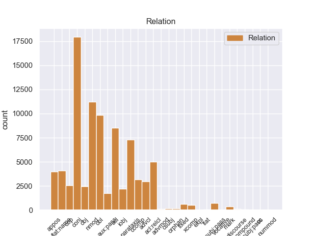
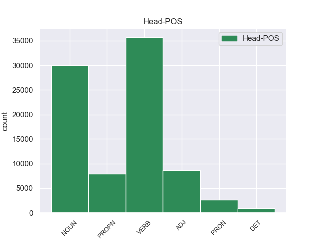
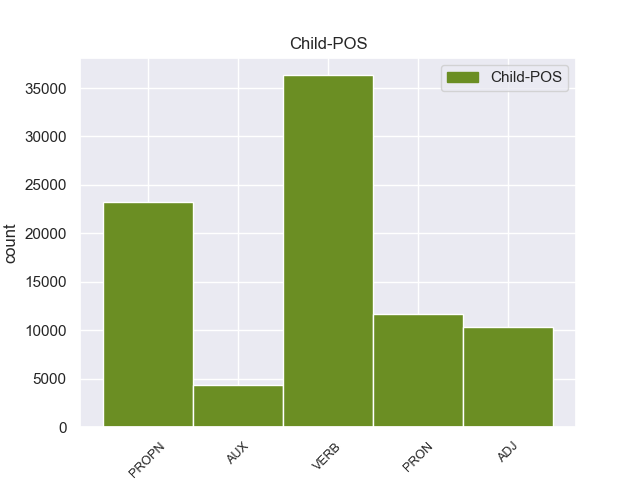

Distribution of features within this leaf



Agreement Rules sorted by frequency.
- When the dependent token is the conjunct(conj) of the head token, and the dependent token is VERB.
1 Но _ _ _ _ 0 _ _ _
2 кто-то _ _ _ _ 0 _ _ _
3 идет идти VERB _ Aspect=Imp|Mood=Ind|Number=Sing|Person=3|Tense=Pres|VerbForm=Fin|Voice=Act 0 _ _ _
4 мне _ _ _ _ 0 _ _ _
5 навстречу _ _ _ _ 0 _ _ _
6 и _ _ _ _ 0 _ _ _
7 , _ _ _ _ 0 _ _ _
8 может _ _ _ _ 0 _ _ _
9 быть _ _ _ _ 0 _ _ _
10 , _ _ _ _ 0 _ _ _
11 прошел пройти VERB _ Aspect=Perf|Gender=Masc|Mood=Ind|Number=Sing|Tense=Past|VerbForm=Fin|Voice=Act 3 conj 3:conj _
12 уже _ _ _ _ 0 _ _ _
13 пол _ _ _ _ 0 _ _ _
14 пути _ _ _ _ 0 _ _ _
15 … _ _ _ _ 0 _ _ _
1 Его _ _ _ _ 0 _ _ _
2 не _ _ _ _ 0 _ _ _
3 защищенные защитить VERB _ Aspect=Perf|Case=Nom|Number=Plur|Tense=Past|VerbForm=Part|Voice=Pass 5 acl 5:acl _
4 очками _ _ _ _ 0 _ _ _
5 глаза глаз NOUN _ Animacy=Inan|Case=Nom|Gender=Masc|Number=Plur 0 _ _ _
6 оказались _ _ _ _ 0 _ _ _
7 в _ _ _ _ 0 _ _ _
8 еле _ _ _ _ 0 _ _ _
9 приметном _ _ _ _ 0 _ _ _
10 красном _ _ _ _ 0 _ _ _
11 обводе _ _ _ _ 0 _ _ _
12 , _ _ _ _ 0 _ _ _
13 будто _ _ _ _ 0 _ _ _
14 кто-то _ _ _ _ 0 _ _ _
15 - _ _ _ _ 0 _ _ _
16 провел _ _ _ _ 0 _ _ _
17 по _ _ _ _ 0 _ _ _
18 векам _ _ _ _ 0 _ _ _
19 тончайшей _ _ _ _ 0 _ _ _
20 кисточкой _ _ _ _ 0 _ _ _
21 . _ _ _ _ 0 _ _ _
1 Был _ _ _ _ 0 _ _ _
2 ли _ _ _ _ 0 _ _ _
3 в _ _ _ _ 0 _ _ _
4 яви _ _ _ _ 0 _ _ _
5 или _ _ _ _ 0 _ _ _
6 только _ _ _ _ 0 _ _ _
7 приснился _ _ _ _ 0 _ _ _
8 мне _ _ _ _ 0 _ _ _
9 этот _ _ _ _ 0 _ _ _
10 странный _ _ _ _ 0 _ _ _
11 мальчик _ _ _ _ 0 _ _ _
12 , _ _ _ _ 0 _ _ _
13 овеянный _ _ _ _ 0 _ _ _
14 нежностью _ _ _ _ 0 _ _ _
15 и _ _ _ _ 0 _ _ _
16 печалью _ _ _ _ 0 _ _ _
17 нездешности _ _ _ _ 0 _ _ _
18 , _ _ _ _ 0 _ _ _
19 как _ _ _ _ 0 _ _ _
20 Маленький _ _ _ _ 0 _ _ _
21 принц принц NOUN _ Animacy=Anim|Case=Nom|Gender=Masc|Number=Sing 0 _ _ _
22 Антуана Антуан PROPN _ Animacy=Anim|Case=Gen|Gender=Masc|Number=Sing 21 nmod 21:nmod _
23 де _ _ _ _ 0 _ _ _
24 Сент-Экзюпери _ _ _ _ 0 _ _ _
25 . _ _ _ _ 0 _ _ _
1 Он _ _ _ _ 0 _ _ _
2 задумался _ _ _ _ 0 _ _ _
3 , _ _ _ _ 0 _ _ _
4 чуть _ _ _ _ 0 _ _ _
5 перекосив _ _ _ _ 0 _ _ _
6 худенькое _ _ _ _ 0 _ _ _
7 лицо _ _ _ _ 0 _ _ _
8 , _ _ _ _ 0 _ _ _
9 и _ _ _ _ 0 _ _ _
10 даже _ _ _ _ 0 _ _ _
11 перестал _ _ _ _ 0 _ _ _
12 выдергивать _ _ _ _ 0 _ _ _
13 цветы _ _ _ _ 0 _ _ _
14 и _ _ _ _ 0 _ _ _
15 травинки _ _ _ _ 0 _ _ _
16 , _ _ _ _ 0 _ _ _
17 в _ _ _ _ 0 _ _ _
18 его _ _ _ _ 0 _ _ _
19 коричневых _ _ _ _ 0 _ _ _
20 глазах _ _ _ _ 0 _ _ _
21 появилась _ _ _ _ 0 _ _ _
22 боль _ _ _ _ 0 _ _ _
23 - _ _ _ _ 0 _ _ _
24 так _ _ _ _ 0 _ _ _
25 трудно _ _ _ _ 0 _ _ _
26 вложить _ _ _ _ 0 _ _ _
27 в _ _ _ _ 0 _ _ _
28 чужую _ _ _ _ 0 _ _ _
29 душу _ _ _ _ 0 _ _ _
30 самые _ _ _ _ 0 _ _ _
31 простые простой ADJ _ Animacy=Inan|Case=Acc|Degree=Pos|Number=Plur 0 _ _ _
32 и _ _ _ _ 0 _ _ _
33 очевидные очевидный ADJ _ Animacy=Inan|Case=Acc|Degree=Pos|Number=Plur 31 conj 31:conj _
34 истины _ _ _ _ 0 _ _ _
35 ! _ _ _ _ 0 _ _ _
1 На _ _ _ _ 0 _ _ _
2 тех _ _ _ _ 0 _ _ _
3 же _ _ _ _ 0 _ _ _
4 состязаниях _ _ _ _ 0 _ _ _
5 он _ _ _ _ 0 _ _ _
6 опередил _ _ _ _ 0 _ _ _
7 в _ _ _ _ 0 _ _ _
8 беге _ _ _ _ 0 _ _ _
9 всех _ _ _ _ 0 _ _ _
10 , _ _ _ _ 0 _ _ _
11 кроме _ _ _ _ 0 _ _ _
12 длинноногого _ _ _ _ 0 _ _ _
13 учителя _ _ _ _ 0 _ _ _
14 математики _ _ _ _ 0 _ _ _
15 Михаила Михаил PROPN _ Animacy=Anim|Case=Gen|Gender=Masc|Number=Sing 0 _ _ _
16 Александровича Александрович PROPN _ Animacy=Anim|Case=Gen|Gender=Masc|Number=Sing 15 flat:name 15:flat:name SpaceAfter=No
17 . _ _ _ _ 0 _ _ _
1 И _ _ _ _ 0 _ _ _
2 была _ _ _ _ 0 _ _ _
3 смуглая _ _ _ _ 0 _ _ _
4 девочка девочка NOUN _ Animacy=Anim|Case=Nom|Gender=Fem|Number=Sing 0 _ _ _
5 с _ _ _ _ 0 _ _ _
6 безжалостно _ _ _ _ 0 _ _ _
7 исцарапанными _ _ _ _ 0 _ _ _
8 ногами _ _ _ _ 0 _ _ _
9 , _ _ _ _ 0 _ _ _
10 сбитыми _ _ _ _ 0 _ _ _
11 коленями _ _ _ _ 0 _ _ _
12 , _ _ _ _ 0 _ _ _
13 острыми _ _ _ _ 0 _ _ _
14 лопатками _ _ _ _ 0 _ _ _
15 задиры _ _ _ _ 0 _ _ _
16 - _ _ _ _ 0 _ _ _
17 вылитая _ _ _ _ 0 _ _ _
18 Галя Галя PROPN _ Animacy=Anim|Case=Nom|Gender=Fem|Number=Sing 4 appos 4:appos SpaceAfter=No
19 , _ _ _ _ 0 _ _ _
20 и _ _ _ _ 0 _ _ _
21 воспитательница _ _ _ _ 0 _ _ _
22 , _ _ _ _ 0 _ _ _
23 учившая _ _ _ _ 0 _ _ _
24 детей _ _ _ _ 0 _ _ _
25 какой-то _ _ _ _ 0 _ _ _
26 игре _ _ _ _ 0 _ _ _
27 , _ _ _ _ 0 _ _ _
28 на _ _ _ _ 0 _ _ _
29 мгновение _ _ _ _ 0 _ _ _
30 повернула _ _ _ _ 0 _ _ _
31 ко _ _ _ _ 0 _ _ _
32 мне _ _ _ _ 0 _ _ _
33 светлую _ _ _ _ 0 _ _ _
34 лунность _ _ _ _ 0 _ _ _
35 круглого _ _ _ _ 0 _ _ _
36 Муриного _ _ _ _ 0 _ _ _
37 лица _ _ _ _ 0 _ _ _
38 . _ _ _ _ 0 _ _ _
1 Но _ _ _ _ 0 _ _ _
2 кто-то _ _ _ _ 0 _ _ _
3 идет _ _ _ _ 0 _ _ _
4 мне _ _ _ _ 0 _ _ _
5 навстречу _ _ _ _ 0 _ _ _
6 и _ _ _ _ 0 _ _ _
7 , _ _ _ _ 0 _ _ _
8 может мочь VERB _ Aspect=Imp|Mood=Ind|Number=Sing|Person=3|Tense=Pres|VerbForm=Fin|Voice=Act 11 parataxis 11:parataxis _
9 быть _ _ _ _ 0 _ _ _
10 , _ _ _ _ 0 _ _ _
11 прошел пройти VERB _ Aspect=Perf|Gender=Masc|Mood=Ind|Number=Sing|Tense=Past|VerbForm=Fin|Voice=Act 0 _ _ _
12 уже _ _ _ _ 0 _ _ _
13 пол _ _ _ _ 0 _ _ _
14 пути _ _ _ _ 0 _ _ _
15 … _ _ _ _ 0 _ _ _
1 Весь _ _ _ _ 0 _ _ _
2 лес _ _ _ _ 0 _ _ _
3 был _ _ _ _ 0 _ _ _
4 населен _ _ _ _ 0 _ _ _
5 голосами _ _ _ _ 0 _ _ _
6 прошлого _ _ _ _ 0 _ _ _
7 , _ _ _ _ 0 _ _ _
8 и _ _ _ _ 0 _ _ _
9 я _ _ _ _ 0 _ _ _
10 впервые _ _ _ _ 0 _ _ _
11 с _ _ _ _ 0 _ _ _
12 ошеломляющей _ _ _ _ 0 _ _ _
13 силой _ _ _ _ 0 _ _ _
14 ощутил _ _ _ _ 0 _ _ _
15 , _ _ _ _ 0 _ _ _
16 как _ _ _ _ 0 _ _ _
17 много _ _ _ _ 0 _ _ _
18 пробыл _ _ _ _ 0 _ _ _
19 на _ _ _ _ 0 _ _ _
20 этом _ _ _ _ 0 _ _ _
21 свете _ _ _ _ 0 _ _ _
22 и _ _ _ _ 0 _ _ _
23 что _ _ _ _ 0 _ _ _
24 прожитое _ _ _ _ 0 _ _ _
25 - _ _ _ _ 0 _ _ _
26 это _ _ _ _ 0 _ _ _
27 не _ _ _ _ 0 _ _ _
28 разбег _ _ _ _ 0 _ _ _
29 для _ _ _ _ 0 _ _ _
30 взлета _ _ _ _ 0 _ _ _
31 в _ _ _ _ 0 _ _ _
32 какую-то _ _ _ _ 0 _ _ _
33 будущую _ _ _ _ 0 _ _ _
34 , _ _ _ _ 0 _ _ _
35 настоящую _ _ _ _ 0 _ _ _
36 жизнь _ _ _ _ 0 _ _ _
37 , _ _ _ _ 0 _ _ _
38 что _ _ _ _ 0 _ _ _
39 это _ _ _ _ 0 _ _ _
40 уже _ _ _ _ 0 _ _ _
41 жизнь жизнь NOUN _ Animacy=Inan|Case=Nom|Gender=Fem|Number=Sing 0 _ _ _
42 , _ _ _ _ 0 _ _ _
43 в _ _ _ _ 0 _ _ _
44 которой _ _ _ _ 0 _ _ _
45 все _ _ _ _ 0 _ _ _
46 связано связать VERB _ Aspect=Perf|Gender=Neut|Number=Sing|Tense=Past|Variant=Short|VerbForm=Part|Voice=Pass 41 acl:relcl 41:acl:relcl SpaceAfter=No
47 : _ _ _ _ 0 _ _ _
48 далекое _ _ _ _ 0 _ _ _
49 прошлое _ _ _ _ 0 _ _ _
49.1 _ _ _ _ _ 0 _ _ _
50 с _ _ _ _ 0 _ _ _
51 настоящим _ _ _ _ 0 _ _ _
52 , _ _ _ _ 0 _ _ _
53 а _ _ _ _ 0 _ _ _
54 если _ _ _ _ 0 _ _ _
55 мне _ _ _ _ 0 _ _ _
56 суждено _ _ _ _ 0 _ _ _
57 будущее _ _ _ _ 0 _ _ _
58 , _ _ _ _ 0 _ _ _
59 то _ _ _ _ 0 _ _ _
60 и _ _ _ _ 0 _ _ _
61 оно _ _ _ _ 0 _ _ _
62 окажется _ _ _ _ 0 _ _ _
63 нерасторжимо _ _ _ _ 0 _ _ _
64 связанным _ _ _ _ 0 _ _ _
65 с _ _ _ _ 0 _ _ _
66 пережитым _ _ _ _ 0 _ _ _
67 ; _ _ _ _ 0 _ _ _
1 - _ _ _ _ 0 _ _ _
2 У _ _ _ _ 0 _ _ _
3 тебя ты PRON _ Case=Gen|Number=Sing|Person=2 5 obl 5:obl _
4 не _ _ _ _ 0 _ _ _
5 хватит хватить VERB _ Aspect=Perf|Mood=Ind|Number=Sing|Person=3|Tense=Fut|VerbForm=Fin|Voice=Act 0 _ _ _
6 сил _ _ _ _ 0 _ _ _
7 . _ _ _ _ 0 _ _ _
1 Недаром _ _ _ _ 0 _ _ _
2 же _ _ _ _ 0 _ _ _
3 у _ _ _ _ 0 _ _ _
4 очкастого _ _ _ _ 0 _ _ _
5 мальчика _ _ _ _ 0 _ _ _
6 руки _ _ _ _ 0 _ _ _
7 были быть AUX _ Aspect=Imp|Mood=Ind|Number=Plur|Tense=Past|VerbForm=Fin|Voice=Act 10 cop 10:cop _
8 в _ _ _ _ 0 _ _ _
9 кровяных _ _ _ _ 0 _ _ _
10 ссадинах ссадина NOUN _ Animacy=Inan|Case=Loc|Gender=Fem|Number=Plur 0 _ _ _
11 . _ _ _ _ 0 _ _ _
1 - _ _ _ _ 0 _ _ _
2 Посуди посудить VERB _ Aspect=Perf|Mood=Imp|Number=Sing|Person=2|VerbForm=Fin|Voice=Act 0 _ _ _
3 сам сам ADJ _ Case=Nom|Degree=Pos|Gender=Masc|Number=Sing 2 obl 2:obl SpaceAfter=No
4 , _ _ _ _ 0 _ _ _
5 разве _ _ _ _ 0 _ _ _
6 стали _ _ _ _ 0 _ _ _
7 бы _ _ _ _ 0 _ _ _
8 ее _ _ _ _ 0 _ _ _
9 строить _ _ _ _ 0 _ _ _
10 , _ _ _ _ 0 _ _ _
11 если _ _ _ _ 0 _ _ _
12 б _ _ _ _ 0 _ _ _
13 она _ _ _ _ 0 _ _ _
14 никуда _ _ _ _ 0 _ _ _
15 не _ _ _ _ 0 _ _ _
16 вела _ _ _ _ 0 _ _ _
17 ? _ _ _ _ 0 _ _ _
1 - _ _ _ _ 0 _ _ _
2 Если _ _ _ _ 0 _ _ _
3 дорога _ _ _ _ 0 _ _ _
4 разрушится разрушиться VERB _ Aspect=Perf|Mood=Ind|Number=Sing|Person=3|Tense=Fut|VerbForm=Fin|Voice=Mid 7 advcl 7:advcl SpaceAfter=No
5 , _ _ _ _ 0 _ _ _
6 она _ _ _ _ 0 _ _ _
7 исчезнет исчезнуть VERB _ Aspect=Perf|Mood=Ind|Number=Sing|Person=3|Tense=Fut|VerbForm=Fin|Voice=Act 0 _ _ _
8 , _ _ _ _ 0 _ _ _
9 и _ _ _ _ 0 _ _ _
10 никто _ _ _ _ 0 _ _ _
11 не _ _ _ _ 0 _ _ _
12 узнает _ _ _ _ 0 _ _ _
13 даже _ _ _ _ 0 _ _ _
14 , _ _ _ _ 0 _ _ _
15 что _ _ _ _ 0 _ _ _
16 тут _ _ _ _ 0 _ _ _
17 была _ _ _ _ 0 _ _ _
18 дорога _ _ _ _ 0 _ _ _
19 . _ _ _ _ 0 _ _ _
1 Волховский _ _ _ _ 0 _ _ _
2 фронт _ _ _ _ 0 _ _ _
3 , _ _ _ _ 0 _ _ _
4 хотя _ _ _ _ 0 _ _ _
5 и _ _ _ _ 0 _ _ _
6 связанный _ _ _ _ 0 _ _ _
7 напрямую _ _ _ _ 0 _ _ _
8 с _ _ _ _ 0 _ _ _
9 Москвой _ _ _ _ 0 _ _ _
10 тремя _ _ _ _ 0 _ _ _
11 железными _ _ _ _ 0 _ _ _
12 дорогами _ _ _ _ 0 _ _ _
13 - _ _ _ _ 0 _ _ _
14 через _ _ _ _ 0 _ _ _
15 Вишеру Вишера PROPN _ Animacy=Inan|Case=Acc|Gender=Fem|Number=Sing 0 _ _ _
16 , _ _ _ _ 0 _ _ _
17 Неболчи _ _ _ _ 0 _ _ _
18 и _ _ _ _ 0 _ _ _
19 Тихвин Тихвин PROPN _ Animacy=Inan|Case=Acc|Gender=Masc|Number=Sing 15 conj 15:conj SpaceAfter=No
20 , _ _ _ _ 0 _ _ _
21 - _ _ _ _ 0 _ _ _
22 снабжался _ _ _ _ 0 _ _ _
23 плохо _ _ _ _ 0 _ _ _
24 , _ _ _ _ 0 _ _ _
25 словно _ _ _ _ 0 _ _ _
26 ему _ _ _ _ 0 _ _ _
27 полагалось _ _ _ _ 0 _ _ _
28 хоть _ _ _ _ 0 _ _ _
29 в _ _ _ _ 0 _ _ _
30 малой _ _ _ _ 0 _ _ _
31 мере _ _ _ _ 0 _ _ _
32 делить _ _ _ _ 0 _ _ _
33 судьбу _ _ _ _ 0 _ _ _
34 блокадного _ _ _ _ 0 _ _ _
35 Ленинграда _ _ _ _ 0 _ _ _
36 , _ _ _ _ 0 _ _ _
37 который _ _ _ _ 0 _ _ _
38 он _ _ _ _ 0 _ _ _
39 никак _ _ _ _ 0 _ _ _
40 не _ _ _ _ 0 _ _ _
41 мог _ _ _ _ 0 _ _ _
42 освободить _ _ _ _ 0 _ _ _
43 . _ _ _ _ 0 _ _ _
1 Мальчик _ _ _ _ 0 _ _ _
2 взял _ _ _ _ 0 _ _ _
3 свою _ _ _ _ 0 _ _ _
4 синь _ _ _ _ 0 _ _ _
5 и _ _ _ _ 0 _ _ _
6 свое _ _ _ _ 0 _ _ _
7 золото _ _ _ _ 0 _ _ _
8 от _ _ _ _ 0 _ _ _
9 Шурика _ _ _ _ 0 _ _ _
10 , _ _ _ _ 0 _ _ _
11 человека _ _ _ _ 0 _ _ _
12 - _ _ _ _ 0 _ _ _
13 рыбки _ _ _ _ 0 _ _ _
14 , _ _ _ _ 0 _ _ _
15 но _ _ _ _ 0 _ _ _
16 в _ _ _ _ 0 _ _ _
17 отличие _ _ _ _ 0 _ _ _
18 от _ _ _ _ 0 _ _ _
19 Шурика Шурик PROPN _ Animacy=Anim|Case=Gen|Gender=Masc|Number=Sing 23 obl 23:obl _
20 этот _ _ _ _ 0 _ _ _
21 маленький _ _ _ _ 0 _ _ _
22 упрямец _ _ _ _ 0 _ _ _
23 казался казаться VERB _ Aspect=Imp|Gender=Masc|Mood=Ind|Number=Sing|Tense=Past|VerbForm=Fin|Voice=Mid 0 _ _ _
24 крепко _ _ _ _ 0 _ _ _
25 заземленным _ _ _ _ 0 _ _ _
26 . _ _ _ _ 0 _ _ _
1 Весь _ _ _ _ 0 _ _ _
2 лес _ _ _ _ 0 _ _ _
3 был быть AUX _ Aspect=Imp|Gender=Masc|Mood=Ind|Number=Sing|Tense=Past|VerbForm=Fin|Voice=Act 4 aux:pass 4:aux:pass _
4 населен населить VERB _ Aspect=Perf|Gender=Masc|Number=Sing|Tense=Past|Variant=Short|VerbForm=Part|Voice=Pass 0 _ _ _
5 голосами _ _ _ _ 0 _ _ _
6 прошлого _ _ _ _ 0 _ _ _
7 , _ _ _ _ 0 _ _ _
8 и _ _ _ _ 0 _ _ _
9 я _ _ _ _ 0 _ _ _
10 впервые _ _ _ _ 0 _ _ _
11 с _ _ _ _ 0 _ _ _
12 ошеломляющей _ _ _ _ 0 _ _ _
13 силой _ _ _ _ 0 _ _ _
14 ощутил _ _ _ _ 0 _ _ _
15 , _ _ _ _ 0 _ _ _
16 как _ _ _ _ 0 _ _ _
17 много _ _ _ _ 0 _ _ _
18 пробыл _ _ _ _ 0 _ _ _
19 на _ _ _ _ 0 _ _ _
20 этом _ _ _ _ 0 _ _ _
21 свете _ _ _ _ 0 _ _ _
22 и _ _ _ _ 0 _ _ _
23 что _ _ _ _ 0 _ _ _
24 прожитое _ _ _ _ 0 _ _ _
25 - _ _ _ _ 0 _ _ _
26 это _ _ _ _ 0 _ _ _
27 не _ _ _ _ 0 _ _ _
28 разбег _ _ _ _ 0 _ _ _
29 для _ _ _ _ 0 _ _ _
30 взлета _ _ _ _ 0 _ _ _
31 в _ _ _ _ 0 _ _ _
32 какую-то _ _ _ _ 0 _ _ _
33 будущую _ _ _ _ 0 _ _ _
34 , _ _ _ _ 0 _ _ _
35 настоящую _ _ _ _ 0 _ _ _
36 жизнь _ _ _ _ 0 _ _ _
37 , _ _ _ _ 0 _ _ _
38 что _ _ _ _ 0 _ _ _
39 это _ _ _ _ 0 _ _ _
40 уже _ _ _ _ 0 _ _ _
41 жизнь _ _ _ _ 0 _ _ _
42 , _ _ _ _ 0 _ _ _
43 в _ _ _ _ 0 _ _ _
44 которой _ _ _ _ 0 _ _ _
45 все _ _ _ _ 0 _ _ _
46 связано _ _ _ _ 0 _ _ _
47 : _ _ _ _ 0 _ _ _
48 далекое _ _ _ _ 0 _ _ _
49 прошлое _ _ _ _ 0 _ _ _
49.1 _ _ _ _ _ 0 _ _ _
50 с _ _ _ _ 0 _ _ _
51 настоящим _ _ _ _ 0 _ _ _
52 , _ _ _ _ 0 _ _ _
53 а _ _ _ _ 0 _ _ _
54 если _ _ _ _ 0 _ _ _
55 мне _ _ _ _ 0 _ _ _
56 суждено _ _ _ _ 0 _ _ _
57 будущее _ _ _ _ 0 _ _ _
58 , _ _ _ _ 0 _ _ _
59 то _ _ _ _ 0 _ _ _
60 и _ _ _ _ 0 _ _ _
61 оно _ _ _ _ 0 _ _ _
62 окажется _ _ _ _ 0 _ _ _
63 нерасторжимо _ _ _ _ 0 _ _ _
64 связанным _ _ _ _ 0 _ _ _
65 с _ _ _ _ 0 _ _ _
66 пережитым _ _ _ _ 0 _ _ _
67 ; _ _ _ _ 0 _ _ _
1 - _ _ _ _ 0 _ _ _
2 Если _ _ _ _ 0 _ _ _
3 дорога _ _ _ _ 0 _ _ _
4 разрушится _ _ _ _ 0 _ _ _
5 , _ _ _ _ 0 _ _ _
6 она _ _ _ _ 0 _ _ _
7 исчезнет _ _ _ _ 0 _ _ _
8 , _ _ _ _ 0 _ _ _
9 и _ _ _ _ 0 _ _ _
10 никто _ _ _ _ 0 _ _ _
11 не _ _ _ _ 0 _ _ _
12 узнает узнавать VERB _ Aspect=Imp|Mood=Ind|Number=Sing|Person=3|Tense=Pres|VerbForm=Fin|Voice=Act 0 _ _ _
13 даже _ _ _ _ 0 _ _ _
14 , _ _ _ _ 0 _ _ _
15 что _ _ _ _ 0 _ _ _
16 тут _ _ _ _ 0 _ _ _
17 была быть VERB _ Aspect=Imp|Gender=Fem|Mood=Ind|Number=Sing|Tense=Past|VerbForm=Fin|Voice=Act 12 ccomp 12:ccomp _
18 дорога _ _ _ _ 0 _ _ _
19 . _ _ _ _ 0 _ _ _
1 - _ _ _ _ 0 _ _ _
2 Ну _ _ _ _ 0 _ _ _
3 и _ _ _ _ 0 _ _ _
4 черт черт NOUN _ Animacy=Anim|Case=Nom|Gender=Masc|Number=Sing 0 _ _ _
5 с _ _ _ _ 0 _ _ _
6 ней она PRON _ Case=Ins|Gender=Fem|Number=Sing|Person=3 4 nmod 4:nmod SpaceAfter=No
7 ! _ _ _ _ 0 _ _ _
1 - _ _ _ _ 0 _ _ _
2 Я _ _ _ _ 0 _ _ _
3 обязательно _ _ _ _ 0 _ _ _
4 ее она PRON _ Case=Acc|Gender=Fem|Number=Sing|Person=3 5 obj 5:obj _
5 расчищу расчистить VERB _ Aspect=Perf|Mood=Ind|Number=Sing|Person=1|Tense=Fut|VerbForm=Fin|Voice=Act 0 _ _ _
6 . _ _ _ _ 0 _ _ _
1 Он _ _ _ _ 0 _ _ _
2 осторожно _ _ _ _ 0 _ _ _
3 , _ _ _ _ 0 _ _ _
4 за _ _ _ _ 0 _ _ _
5 дужку _ _ _ _ 0 _ _ _
6 , _ _ _ _ 0 _ _ _
7 снял _ _ _ _ 0 _ _ _
8 очки _ _ _ _ 0 _ _ _
9 , _ _ _ _ 0 _ _ _
10 ему он PRON _ Case=Dat|Gender=Masc|Number=Sing|Person=3 11 iobj 11:iobj _
11 хотелось хотеться VERB _ Aspect=Imp|Gender=Neut|Mood=Ind|Number=Sing|Tense=Past|VerbForm=Fin|Voice=Mid 0 _ _ _
12 получше _ _ _ _ 0 _ _ _
13 рассмотреть _ _ _ _ 0 _ _ _
14 человека _ _ _ _ 0 _ _ _
15 , _ _ _ _ 0 _ _ _
16 задающего _ _ _ _ 0 _ _ _
17 такие _ _ _ _ 0 _ _ _
18 несуразные _ _ _ _ 0 _ _ _
19 вопросы _ _ _ _ 0 _ _ _
20 , _ _ _ _ 0 _ _ _
21 а _ _ _ _ 0 _ _ _
22 припылившиеся _ _ _ _ 0 _ _ _
23 стекла _ _ _ _ 0 _ _ _
24 только _ _ _ _ 0 _ _ _
25 мешали _ _ _ _ 0 _ _ _
26 . _ _ _ _ 0 _ _ _
1 Он _ _ _ _ 0 _ _ _
2 задумался _ _ _ _ 0 _ _ _
3 , _ _ _ _ 0 _ _ _
4 чуть _ _ _ _ 0 _ _ _
5 перекосив _ _ _ _ 0 _ _ _
6 худенькое _ _ _ _ 0 _ _ _
7 лицо _ _ _ _ 0 _ _ _
8 , _ _ _ _ 0 _ _ _
9 и _ _ _ _ 0 _ _ _
10 даже _ _ _ _ 0 _ _ _
11 перестал _ _ _ _ 0 _ _ _
12 выдергивать _ _ _ _ 0 _ _ _
13 цветы _ _ _ _ 0 _ _ _
14 и _ _ _ _ 0 _ _ _
15 травинки _ _ _ _ 0 _ _ _
16 , _ _ _ _ 0 _ _ _
17 в _ _ _ _ 0 _ _ _
18 его _ _ _ _ 0 _ _ _
19 коричневых _ _ _ _ 0 _ _ _
20 глазах _ _ _ _ 0 _ _ _
21 появилась появиться VERB _ Aspect=Perf|Gender=Fem|Mood=Ind|Number=Sing|Tense=Past|VerbForm=Fin|Voice=Mid 0 _ _ _
22 боль _ _ _ _ 0 _ _ _
23 - _ _ _ _ 0 _ _ _
24 так _ _ _ _ 0 _ _ _
25 трудно трудный ADJ _ Degree=Pos|Gender=Neut|Number=Sing|Variant=Short 21 parataxis 21:parataxis _
26 вложить _ _ _ _ 0 _ _ _
27 в _ _ _ _ 0 _ _ _
28 чужую _ _ _ _ 0 _ _ _
29 душу _ _ _ _ 0 _ _ _
30 самые _ _ _ _ 0 _ _ _
31 простые _ _ _ _ 0 _ _ _
32 и _ _ _ _ 0 _ _ _
33 очевидные _ _ _ _ 0 _ _ _
34 истины _ _ _ _ 0 _ _ _
35 ! _ _ _ _ 0 _ _ _
1 Радостно _ _ _ _ 0 _ _ _
2 - _ _ _ _ 0 _ _ _
3 тревожное _ _ _ _ 0 _ _ _
4 чувство _ _ _ _ 0 _ _ _
5 владело _ _ _ _ 0 _ _ _
6 мною _ _ _ _ 0 _ _ _
7 : _ _ _ _ 0 _ _ _
8 я _ _ _ _ 0 _ _ _
9 знал _ _ _ _ 0 _ _ _
10 , _ _ _ _ 0 _ _ _
11 что _ _ _ _ 0 _ _ _
12 ушел _ _ _ _ 0 _ _ _
13 не _ _ _ _ 0 _ _ _
14 так _ _ _ _ 0 _ _ _
15 уж _ _ _ _ 0 _ _ _
16 далеко _ _ _ _ 0 _ _ _
17 и _ _ _ _ 0 _ _ _
18 все _ _ _ _ 0 _ _ _
19 же _ _ _ _ 0 _ _ _
20 куда _ _ _ _ 0 _ _ _
21 сильнее _ _ _ _ 0 _ _ _
22 оторвался _ _ _ _ 0 _ _ _
23 от _ _ _ _ 0 _ _ _
24 дома _ _ _ _ 0 _ _ _
25 , _ _ _ _ 0 _ _ _
26 чем _ _ _ _ 0 _ _ _
27 если _ _ _ _ 0 _ _ _
28 бы _ _ _ _ 0 _ _ _
29 забрел _ _ _ _ 0 _ _ _
30 в _ _ _ _ 0 _ _ _
31 последнюю _ _ _ _ 0 _ _ _
32 даль _ _ _ _ 0 _ _ _
33 по _ _ _ _ 0 _ _ _
34 знакомой знакомый ADJ _ Case=Dat|Degree=Pos|Gender=Fem|Number=Sing 37 acl 37:acl SpaceAfter=No
35 , _ _ _ _ 0 _ _ _
36 проторенной _ _ _ _ 0 _ _ _
37 тропке тропка NOUN _ Animacy=Inan|Case=Dat|Gender=Fem|Number=Sing 0 _ _ _
38 . _ _ _ _ 0 _ _ _
1 Весь _ _ _ _ 0 _ _ _
2 лес _ _ _ _ 0 _ _ _
3 был _ _ _ _ 0 _ _ _
4 населен _ _ _ _ 0 _ _ _
5 голосами _ _ _ _ 0 _ _ _
6 прошлого _ _ _ _ 0 _ _ _
7 , _ _ _ _ 0 _ _ _
8 и _ _ _ _ 0 _ _ _
9 я _ _ _ _ 0 _ _ _
10 впервые _ _ _ _ 0 _ _ _
11 с _ _ _ _ 0 _ _ _
12 ошеломляющей _ _ _ _ 0 _ _ _
13 силой _ _ _ _ 0 _ _ _
14 ощутил _ _ _ _ 0 _ _ _
15 , _ _ _ _ 0 _ _ _
16 как _ _ _ _ 0 _ _ _
17 много _ _ _ _ 0 _ _ _
18 пробыл _ _ _ _ 0 _ _ _
19 на _ _ _ _ 0 _ _ _
20 этом _ _ _ _ 0 _ _ _
21 свете _ _ _ _ 0 _ _ _
22 и _ _ _ _ 0 _ _ _
23 что _ _ _ _ 0 _ _ _
24 прожитое _ _ _ _ 0 _ _ _
25 - _ _ _ _ 0 _ _ _
26 это _ _ _ _ 0 _ _ _
27 не _ _ _ _ 0 _ _ _
28 разбег _ _ _ _ 0 _ _ _
29 для _ _ _ _ 0 _ _ _
30 взлета _ _ _ _ 0 _ _ _
31 в _ _ _ _ 0 _ _ _
32 какую-то _ _ _ _ 0 _ _ _
33 будущую _ _ _ _ 0 _ _ _
34 , _ _ _ _ 0 _ _ _
35 настоящую _ _ _ _ 0 _ _ _
36 жизнь _ _ _ _ 0 _ _ _
37 , _ _ _ _ 0 _ _ _
38 что _ _ _ _ 0 _ _ _
39 это _ _ _ _ 0 _ _ _
40 уже _ _ _ _ 0 _ _ _
41 жизнь _ _ _ _ 0 _ _ _
42 , _ _ _ _ 0 _ _ _
43 в _ _ _ _ 0 _ _ _
44 которой _ _ _ _ 0 _ _ _
45 все все PRON _ Animacy=Inan|Case=Nom|Gender=Neut|Number=Sing 46 nsubj:pass 46:nsubj:pass _
46 связано связать VERB _ Aspect=Perf|Gender=Neut|Number=Sing|Tense=Past|Variant=Short|VerbForm=Part|Voice=Pass 0 _ _ _
47 : _ _ _ _ 0 _ _ _
48 далекое _ _ _ _ 0 _ _ _
49 прошлое _ _ _ _ 0 _ _ _
49.1 _ _ _ _ _ 0 _ _ _
50 с _ _ _ _ 0 _ _ _
51 настоящим _ _ _ _ 0 _ _ _
52 , _ _ _ _ 0 _ _ _
53 а _ _ _ _ 0 _ _ _
54 если _ _ _ _ 0 _ _ _
55 мне _ _ _ _ 0 _ _ _
56 суждено _ _ _ _ 0 _ _ _
57 будущее _ _ _ _ 0 _ _ _
58 , _ _ _ _ 0 _ _ _
59 то _ _ _ _ 0 _ _ _
60 и _ _ _ _ 0 _ _ _
61 оно _ _ _ _ 0 _ _ _
62 окажется _ _ _ _ 0 _ _ _
63 нерасторжимо _ _ _ _ 0 _ _ _
64 связанным _ _ _ _ 0 _ _ _
65 с _ _ _ _ 0 _ _ _
66 пережитым _ _ _ _ 0 _ _ _
67 ; _ _ _ _ 0 _ _ _
1 А _ _ _ _ 0 _ _ _
2 в _ _ _ _ 0 _ _ _
3 Иркутске _ _ _ _ 0 _ _ _
4 переломилось _ _ _ _ 0 _ _ _
5 не _ _ _ _ 0 _ _ _
6 только _ _ _ _ 0 _ _ _
7 мое _ _ _ _ 0 _ _ _
8 комнатное _ _ _ _ 0 _ _ _
9 существование _ _ _ _ 0 _ _ _
10 - _ _ _ _ 0 _ _ _
11 домашний _ _ _ _ 0 _ _ _
12 зверек _ _ _ _ 0 _ _ _
13 увидел _ _ _ _ 0 _ _ _
14 , _ _ _ _ 0 _ _ _
15 как _ _ _ _ 0 _ _ _
16 огромен _ _ _ _ 0 _ _ _
17 , _ _ _ _ 0 _ _ _
18 многообразен _ _ _ _ 0 _ _ _
19 , _ _ _ _ 0 _ _ _
20 сложен _ _ _ _ 0 _ _ _
21 мир _ _ _ _ 0 _ _ _
22 , _ _ _ _ 0 _ _ _
23 свершился _ _ _ _ 0 _ _ _
24 переход _ _ _ _ 0 _ _ _
25 от _ _ _ _ 0 _ _ _
26 младенческой _ _ _ _ 0 _ _ _
27 всеядности _ _ _ _ 0 _ _ _
28 к _ _ _ _ 0 _ _ _
29 отбору _ _ _ _ 0 _ _ _
30 , _ _ _ _ 0 _ _ _
31 то то PRON _ Animacy=Inan|Case=Nom|Gender=Neut|Number=Sing 0 _ _ _
32 есть быть VERB _ Aspect=Imp|Mood=Ind|Number=Sing|Person=3|Tense=Pres|VerbForm=Fin|Voice=Act 31 fixed 31:fixed _
33 к _ _ _ _ 0 _ _ _
34 характеру _ _ _ _ 0 _ _ _
35 . _ _ _ _ 0 _ _ _
1 - _ _ _ _ 0 _ _ _
2 Разве _ _ _ _ 0 _ _ _
3 мы _ _ _ _ 0 _ _ _
4 знаем знать VERB _ Aspect=Imp|Mood=Ind|Number=Plur|Person=1|Tense=Pres|VerbForm=Fin|Voice=Act 0 _ _ _
5 , _ _ _ _ 0 _ _ _
6 почему _ _ _ _ 0 _ _ _
7 дорогу _ _ _ _ 0 _ _ _
8 забросили забросить VERB _ Aspect=Perf|Mood=Ind|Number=Plur|Tense=Past|VerbForm=Fin|Voice=Act 4 xcomp 4:xcomp SpaceAfter=No
9 ? _ _ _ _ 0 _ _ _
1 Мое _ _ _ _ 0 _ _ _
2 сердце _ _ _ _ 0 _ _ _
3 , _ _ _ _ 0 _ _ _
4 моя _ _ _ _ 0 _ _ _
5 боль _ _ _ _ 0 _ _ _
6 неизменно _ _ _ _ 0 _ _ _
7 принадлежали _ _ _ _ 0 _ _ _
8 второму второй ADJ _ Case=Dat|Degree=Pos|Gender=Masc|Number=Sing 0 _ _ _
9 : _ _ _ _ 0 _ _ _
10 не _ _ _ _ 0 _ _ _
11 Пушкину Пушкин PROPN _ Animacy=Anim|Case=Dat|Gender=Masc|Number=Sing 8 parataxis 8:parataxis SpaceAfter=No
12 , _ _ _ _ 0 _ _ _
13 а _ _ _ _ 0 _ _ _
14 Лермонтову _ _ _ _ 0 _ _ _
15 , _ _ _ _ 0 _ _ _
16 не _ _ _ _ 0 _ _ _
17 Толстому _ _ _ _ 0 _ _ _
18 , _ _ _ _ 0 _ _ _
19 а _ _ _ _ 0 _ _ _
20 Достоевскому _ _ _ _ 0 _ _ _
21 , _ _ _ _ 0 _ _ _
22 не _ _ _ _ 0 _ _ _
23 Алехину _ _ _ _ 0 _ _ _
24 , _ _ _ _ 0 _ _ _
25 а _ _ _ _ 0 _ _ _
26 Капабланке _ _ _ _ 0 _ _ _
27 , _ _ _ _ 0 _ _ _
28 не _ _ _ _ 0 _ _ _
29 Качалову _ _ _ _ 0 _ _ _
30 , _ _ _ _ 0 _ _ _
31 а _ _ _ _ 0 _ _ _
32 Леонидову _ _ _ _ 0 _ _ _
33 , _ _ _ _ 0 _ _ _
34 не _ _ _ _ 0 _ _ _
35 Козловскому _ _ _ _ 0 _ _ _
36 , _ _ _ _ 0 _ _ _
37 а _ _ _ _ 0 _ _ _
38 Лемешеву _ _ _ _ 0 _ _ _
39 . _ _ _ _ 0 _ _ _
1 Вдова _ _ _ _ 0 _ _ _
2 третьего _ _ _ _ 0 _ _ _
3 во _ _ _ _ 0 _ _ _
4 втором _ _ _ _ 0 _ _ _
5 ряду _ _ _ _ 0 _ _ _
6 приходилась приходиться VERB _ Aspect=Imp|Gender=Fem|Mood=Ind|Number=Sing|Tense=Past|VerbForm=Fin|Voice=Mid 0 _ _ _
7 Павлову Павлов PROPN _ Animacy=Anim|Case=Dat|Gender=Masc|Number=Sing 6 iobj 6:iobj _
8 матерью _ _ _ _ 0 _ _ _
9 , _ _ _ _ 0 _ _ _
10 дочь _ _ _ _ 0 _ _ _
11 - _ _ _ _ 0 _ _ _
11.1 _ _ _ _ _ 0 _ _ _
12 сестрой _ _ _ _ 0 _ _ _
13 , _ _ _ _ 0 _ _ _
14 обе _ _ _ _ 0 _ _ _
15 требовали _ _ _ _ 0 _ _ _
16 постоянной _ _ _ _ 0 _ _ _
17 заботы _ _ _ _ 0 _ _ _
18 . _ _ _ _ 0 _ _ _
1 Сперва _ _ _ _ 0 _ _ _
2 я _ _ _ _ 0 _ _ _
3 увидел _ _ _ _ 0 _ _ _
4 дымок _ _ _ _ 0 _ _ _
5 , _ _ _ _ 0 _ _ _
6 ровной _ _ _ _ 0 _ _ _
7 голубой _ _ _ _ 0 _ _ _
8 струйкой _ _ _ _ 0 _ _ _
9 сочившийся _ _ _ _ 0 _ _ _
10 из _ _ _ _ 0 _ _ _
11 орешника _ _ _ _ 0 _ _ _
12 , _ _ _ _ 0 _ _ _
13 и _ _ _ _ 0 _ _ _
14 у _ _ _ _ 0 _ _ _
15 меня _ _ _ _ 0 _ _ _
16 мелькнула _ _ _ _ 0 _ _ _
17 мысль _ _ _ _ 0 _ _ _
18 о _ _ _ _ 0 _ _ _
19 лесном _ _ _ _ 0 _ _ _
20 пожаре _ _ _ _ 0 _ _ _
21 , _ _ _ _ 0 _ _ _
22 но _ _ _ _ 0 _ _ _
23 потом _ _ _ _ 0 _ _ _
24 я _ _ _ _ 0 _ _ _
25 различил _ _ _ _ 0 _ _ _
26 съедобный _ _ _ _ 0 _ _ _
27 запах _ _ _ _ 0 _ _ _
28 этого _ _ _ _ 0 _ _ _
29 дымка _ _ _ _ 0 _ _ _
30 и _ _ _ _ 0 _ _ _
31 вспомнил вспомянуть VERB _ Aspect=Perf|Gender=Masc|Mood=Ind|Number=Sing|Tense=Past|VerbForm=Fin|Voice=Act 0 _ _ _
32 Учу Уча PROPN _ Animacy=Anim|Case=Acc|Gender=Fem|Number=Sing 31 obj 31:obj _
33 и _ _ _ _ 0 _ _ _
34 старого _ _ _ _ 0 _ _ _
35 пастуха _ _ _ _ 0 _ _ _
36 , _ _ _ _ 0 _ _ _
37 варившего _ _ _ _ 0 _ _ _
38 кулеш _ _ _ _ 0 _ _ _
39 в _ _ _ _ 0 _ _ _
40 прокопченном _ _ _ _ 0 _ _ _
41 солдатском _ _ _ _ 0 _ _ _
42 котелке _ _ _ _ 0 _ _ _
43 . _ _ _ _ 0 _ _ _
1 Миновав _ _ _ _ 0 _ _ _
2 высоковольтную _ _ _ _ 0 _ _ _
3 линию _ _ _ _ 0 _ _ _
4 , _ _ _ _ 0 _ _ _
5 уже _ _ _ _ 0 _ _ _
6 в _ _ _ _ 0 _ _ _
7 виду _ _ _ _ 0 _ _ _
8 сосняка _ _ _ _ 0 _ _ _
9 , _ _ _ _ 0 _ _ _
10 он _ _ _ _ 0 _ _ _
11 почувствовал почувствовать VERB _ Aspect=Perf|Gender=Masc|Mood=Ind|Number=Sing|Tense=Past|VerbForm=Fin|Voice=Act 0 _ _ _
12 , _ _ _ _ 0 _ _ _
13 что _ _ _ _ 0 _ _ _
14 ему _ _ _ _ 0 _ _ _
15 мучительно мучительный ADJ _ Degree=Pos|Gender=Neut|Number=Sing|Variant=Short 11 ccomp 11:ccomp _
16 идти _ _ _ _ 0 _ _ _
17 прежней _ _ _ _ 0 _ _ _
18 дорогой _ _ _ _ 0 _ _ _
19 , _ _ _ _ 0 _ _ _
20 и _ _ _ _ 0 _ _ _
21 направился _ _ _ _ 0 _ _ _
22 в _ _ _ _ 0 _ _ _
23 обход _ _ _ _ 0 _ _ _
24 березовым _ _ _ _ 0 _ _ _
25 перелеском _ _ _ _ 0 _ _ _
26 . _ _ _ _ 0 _ _ _
1 Возле _ _ _ _ 0 _ _ _
2 поселка _ _ _ _ 0 _ _ _
3 находился _ _ _ _ 0 _ _ _
4 санаторий _ _ _ _ 0 _ _ _
5 , _ _ _ _ 0 _ _ _
6 там _ _ _ _ 0 _ _ _
7 шло _ _ _ _ 0 _ _ _
8 строительство _ _ _ _ 0 _ _ _
9 и _ _ _ _ 0 _ _ _
10 была _ _ _ _ 0 _ _ _
11 нужда _ _ _ _ 0 _ _ _
12 в _ _ _ _ 0 _ _ _
13 главном _ _ _ _ 0 _ _ _
14 инженере _ _ _ _ 0 _ _ _
15 ; _ _ _ _ 0 _ _ _
16 под _ _ _ _ 0 _ _ _
17 боком _ _ _ _ 0 _ _ _
18 располагалась _ _ _ _ 0 _ _ _
19 отличная _ _ _ _ 0 _ _ _
20 школа школа NOUN _ Animacy=Inan|Case=Nom|Gender=Fem|Number=Sing 0 _ _ _
21 - _ _ _ _ 0 _ _ _
22 десятилетка _ _ _ _ 0 _ _ _
23 , _ _ _ _ 0 _ _ _
24 где _ _ _ _ 0 _ _ _
25 как _ _ _ _ 0 _ _ _
26 раз _ _ _ _ 0 _ _ _
27 нужен нужный ADJ _ Degree=Pos|Gender=Masc|Number=Sing|Variant=Short 20 acl:relcl 20:acl:relcl _
28 был _ _ _ _ 0 _ _ _
29 преподаватель _ _ _ _ 0 _ _ _
30 английского _ _ _ _ 0 _ _ _
31 языка _ _ _ _ 0 _ _ _
32 , _ _ _ _ 0 _ _ _
33 а _ _ _ _ 0 _ _ _
34 жена _ _ _ _ 0 _ _ _
35 Павлова _ _ _ _ 0 _ _ _
36 занималась _ _ _ _ 0 _ _ _
37 техническими _ _ _ _ 0 _ _ _
38 переводами _ _ _ _ 0 _ _ _
39 с _ _ _ _ 0 _ _ _
40 английского _ _ _ _ 0 _ _ _
41 . _ _ _ _ 0 _ _ _
1 А _ _ _ _ 0 _ _ _
2 в _ _ _ _ 0 _ _ _
3 Иркутске _ _ _ _ 0 _ _ _
4 переломилось _ _ _ _ 0 _ _ _
5 не _ _ _ _ 0 _ _ _
6 только _ _ _ _ 0 _ _ _
7 мое _ _ _ _ 0 _ _ _
8 комнатное _ _ _ _ 0 _ _ _
9 существование _ _ _ _ 0 _ _ _
10 - _ _ _ _ 0 _ _ _
11 домашний _ _ _ _ 0 _ _ _
12 зверек _ _ _ _ 0 _ _ _
13 увидел _ _ _ _ 0 _ _ _
14 , _ _ _ _ 0 _ _ _
15 как _ _ _ _ 0 _ _ _
16 огромен _ _ _ _ 0 _ _ _
17 , _ _ _ _ 0 _ _ _
18 многообразен _ _ _ _ 0 _ _ _
19 , _ _ _ _ 0 _ _ _
20 сложен _ _ _ _ 0 _ _ _
21 мир _ _ _ _ 0 _ _ _
22 , _ _ _ _ 0 _ _ _
23 свершился _ _ _ _ 0 _ _ _
24 переход _ _ _ _ 0 _ _ _
25 от _ _ _ _ 0 _ _ _
26 младенческой _ _ _ _ 0 _ _ _
27 всеядности _ _ _ _ 0 _ _ _
28 к _ _ _ _ 0 _ _ _
29 отбору _ _ _ _ 0 _ _ _
30 , _ _ _ _ 0 _ _ _
31 то то PRON _ Animacy=Inan|Case=Nom|Gender=Neut|Number=Sing 34 mark 34:mark _
32 есть _ _ _ _ 0 _ _ _
33 к _ _ _ _ 0 _ _ _
34 характеру характер NOUN _ Animacy=Inan|Case=Dat|Gender=Masc|Number=Sing 0 _ _ _
35 . _ _ _ _ 0 _ _ _
1 Когда _ _ _ _ 0 _ _ _
2 ветрено _ _ _ _ 0 _ _ _
3 , _ _ _ _ 0 _ _ _
4 дорога _ _ _ _ 0 _ _ _
5 пылит пылить VERB _ Aspect=Imp|Mood=Ind|Number=Sing|Person=3|Tense=Pres|VerbForm=Fin|Voice=Act 0 _ _ _
6 , _ _ _ _ 0 _ _ _
7 а _ _ _ _ 0 _ _ _
8 у _ _ _ _ 0 _ _ _
9 меня я PRON _ Case=Gen|Number=Sing|Person=1 5 conj 5:conj _
10 конъюнктивит _ _ _ _ 0 _ _ _
11 , _ _ _ _ 0 _ _ _
12 - _ _ _ _ 0 _ _ _
13 пояснил _ _ _ _ 0 _ _ _
14 он _ _ _ _ 0 _ _ _
15 с _ _ _ _ 0 _ _ _
16 гордостью _ _ _ _ 0 _ _ _
17 . _ _ _ _ 0 _ _ _
1 - _ _ _ _ 0 _ _ _
2 Она _ _ _ _ 0 _ _ _
3 все все PRON _ Animacy=Inan|Case=Nom|Gender=Neut|Number=Sing 0 _ _ _
4 равно равный ADJ _ Degree=Pos|Gender=Neut|Number=Sing|Variant=Short 3 fixed 3:fixed _
5 никуда _ _ _ _ 0 _ _ _
6 не _ _ _ _ 0 _ _ _
7 ведет _ _ _ _ 0 _ _ _
8 ! _ _ _ _ 0 _ _ _
1 Кроме _ _ _ _ 0 _ _ _
2 того то PRON _ Animacy=Inan|Case=Gen|Gender=Neut|Number=Sing 7 parataxis 7:parataxis SpaceAfter=No
3 , _ _ _ _ 0 _ _ _
4 использование _ _ _ _ 0 _ _ _
5 жидких _ _ _ _ 0 _ _ _
6 мембран _ _ _ _ 0 _ _ _
7 может мочь VERB _ Aspect=Imp|Mood=Ind|Number=Sing|Person=3|Tense=Pres|VerbForm=Fin|Voice=Act 0 _ _ _
8 дать _ _ _ _ 0 _ _ _
9 значительный _ _ _ _ 0 _ _ _
10 экономический _ _ _ _ 0 _ _ _
11 эффект _ _ _ _ 0 _ _ _
12 в _ _ _ _ 0 _ _ _
13 сложившихся _ _ _ _ 0 _ _ _
14 традиционных _ _ _ _ 0 _ _ _
15 химических _ _ _ _ 0 _ _ _
16 производствах _ _ _ _ 0 _ _ _
17 - _ _ _ _ 0 _ _ _
18 можно _ _ _ _ 0 _ _ _
19 создавать _ _ _ _ 0 _ _ _
20 простые _ _ _ _ 0 _ _ _
21 и _ _ _ _ 0 _ _ _
22 малоэнергоемкие _ _ _ _ 0 _ _ _
23 технологические _ _ _ _ 0 _ _ _
24 схемы _ _ _ _ 0 _ _ _
25 получения _ _ _ _ 0 _ _ _
26 металлов _ _ _ _ 0 _ _ _
27 и _ _ _ _ 0 _ _ _
28 их _ _ _ _ 0 _ _ _
29 соединений _ _ _ _ 0 _ _ _
30 путем _ _ _ _ 0 _ _ _
31 переработки _ _ _ _ 0 _ _ _
32 вторичного _ _ _ _ 0 _ _ _
33 сырья _ _ _ _ 0 _ _ _
34 и _ _ _ _ 0 _ _ _
35 отходов _ _ _ _ 0 _ _ _
36 . _ _ _ _ 0 _ _ _
1 Весь _ _ _ _ 0 _ _ _
2 лес _ _ _ _ 0 _ _ _
3 был _ _ _ _ 0 _ _ _
4 населен _ _ _ _ 0 _ _ _
5 голосами _ _ _ _ 0 _ _ _
6 прошлого _ _ _ _ 0 _ _ _
7 , _ _ _ _ 0 _ _ _
8 и _ _ _ _ 0 _ _ _
9 я _ _ _ _ 0 _ _ _
10 впервые _ _ _ _ 0 _ _ _
11 с _ _ _ _ 0 _ _ _
12 ошеломляющей _ _ _ _ 0 _ _ _
13 силой _ _ _ _ 0 _ _ _
14 ощутил _ _ _ _ 0 _ _ _
15 , _ _ _ _ 0 _ _ _
16 как _ _ _ _ 0 _ _ _
17 много _ _ _ _ 0 _ _ _
18 пробыл _ _ _ _ 0 _ _ _
19 на _ _ _ _ 0 _ _ _
20 этом _ _ _ _ 0 _ _ _
21 свете _ _ _ _ 0 _ _ _
22 и _ _ _ _ 0 _ _ _
23 что _ _ _ _ 0 _ _ _
24 прожитое _ _ _ _ 0 _ _ _
25 - _ _ _ _ 0 _ _ _
26 это _ _ _ _ 0 _ _ _
27 не _ _ _ _ 0 _ _ _
28 разбег _ _ _ _ 0 _ _ _
29 для _ _ _ _ 0 _ _ _
30 взлета _ _ _ _ 0 _ _ _
31 в _ _ _ _ 0 _ _ _
32 какую-то _ _ _ _ 0 _ _ _
33 будущую _ _ _ _ 0 _ _ _
34 , _ _ _ _ 0 _ _ _
35 настоящую _ _ _ _ 0 _ _ _
36 жизнь _ _ _ _ 0 _ _ _
37 , _ _ _ _ 0 _ _ _
38 что _ _ _ _ 0 _ _ _
39 это _ _ _ _ 0 _ _ _
40 уже _ _ _ _ 0 _ _ _
41 жизнь _ _ _ _ 0 _ _ _
42 , _ _ _ _ 0 _ _ _
43 в _ _ _ _ 0 _ _ _
44 которой _ _ _ _ 0 _ _ _
45 все _ _ _ _ 0 _ _ _
46 связано _ _ _ _ 0 _ _ _
47 : _ _ _ _ 0 _ _ _
48 далекое _ _ _ _ 0 _ _ _
49 прошлое _ _ _ _ 0 _ _ _
49.1 _ _ _ _ _ 0 _ _ _
50 с _ _ _ _ 0 _ _ _
51 настоящим _ _ _ _ 0 _ _ _
52 , _ _ _ _ 0 _ _ _
53 а _ _ _ _ 0 _ _ _
54 если _ _ _ _ 0 _ _ _
55 мне _ _ _ _ 0 _ _ _
56 суждено сужден ADJ _ Degree=Pos|Gender=Neut|Number=Sing|Variant=Short 62 advcl 62:advcl _
57 будущее _ _ _ _ 0 _ _ _
58 , _ _ _ _ 0 _ _ _
59 то _ _ _ _ 0 _ _ _
60 и _ _ _ _ 0 _ _ _
61 оно _ _ _ _ 0 _ _ _
When the dependent token is the passive nominal subject(nsubj:pass) of the head token, and the dependent token is PROPN.
1 Уже _ _ _ _ 0 _ _ _
2 на _ _ _ _ 0 _ _ _
3 первой _ _ _ _ 0 _ _ _
4 сессии _ _ _ _ 0 _ _ _
5 вновь _ _ _ _ 0 _ _ _
6 избранного _ _ _ _ 0 _ _ _
7 Верховного _ _ _ _ 0 _ _ _
8 Совета _ _ _ _ 0 _ _ _
9 СССР _ _ _ _ 0 _ _ _
10 будут _ _ _ _ 0 _ _ _
11 вынесены вынести VERB _ Aspect=Perf|Number=Plur|Tense=Past|Variant=Short|VerbForm=Part|Voice=Pass 0 _ _ _
12 Законы Закон PROPN _ Animacy=Inan|Case=Nom|Gender=Masc|Number=Plur 11 nsubj:pass 11:nsubj:pass _
13 о _ _ _ _ 0 _ _ _
14 профсоюзах _ _ _ _ 0 _ _ _
15 , _ _ _ _ 0 _ _ _
16 о _ _ _ _ 0 _ _ _
17 молодежи _ _ _ _ 0 _ _ _
18 , _ _ _ _ 0 _ _ _
19 о _ _ _ _ 0 _ _ _
20 печати _ _ _ _ 0 _ _ _
21 , _ _ _ _ 0 _ _ _
22 о _ _ _ _ 0 _ _ _
23 гласности _ _ _ _ 0 _ _ _
24 в _ _ _ _ 0 _ _ _
25 работе _ _ _ _ 0 _ _ _
26 государственных _ _ _ _ 0 _ _ _
27 органов _ _ _ _ 0 _ _ _
28 и _ _ _ _ 0 _ _ _
29 общественных _ _ _ _ 0 _ _ _
30 организаций _ _ _ _ 0 _ _ _
31 , _ _ _ _ 0 _ _ _
32 о _ _ _ _ 0 _ _ _
33 добровольных _ _ _ _ 0 _ _ _
34 обществах _ _ _ _ 0 _ _ _
35 , _ _ _ _ 0 _ _ _
36 об _ _ _ _ 0 _ _ _
37 Основах _ _ _ _ 0 _ _ _
38 уголовного _ _ _ _ 0 _ _ _
39 законодательства _ _ _ _ 0 _ _ _
40 , _ _ _ _ 0 _ _ _
41 пенсионном _ _ _ _ 0 _ _ _
42 обеспечении _ _ _ _ 0 _ _ _
43 и _ _ _ _ 0 _ _ _
44 другие _ _ _ _ 0 _ _ _
45 . _ _ _ _ 0 _ _ _
When the dependent token is the clausal subject(csubj) of the head token, and the dependent token is VERB.
1 Дети _ _ _ _ 0 _ _ _
2 часами _ _ _ _ 0 _ _ _
3 могли _ _ _ _ 0 _ _ _
4 следить _ _ _ _ 0 _ _ _
5 за _ _ _ _ 0 _ _ _
6 дятлом _ _ _ _ 0 _ _ _
7 , _ _ _ _ 0 _ _ _
8 который _ _ _ _ 0 _ _ _
9 с _ _ _ _ 0 _ _ _
10 таким _ _ _ _ 0 _ _ _
11 неистовством _ _ _ _ 0 _ _ _
12 долбил _ _ _ _ 0 _ _ _
13 клювом _ _ _ _ 0 _ _ _
14 сосну _ _ _ _ 0 _ _ _
15 , _ _ _ _ 0 _ _ _
16 что _ _ _ _ 0 _ _ _
17 казалось казаться VERB _ Aspect=Imp|Gender=Neut|Mood=Ind|Number=Sing|Tense=Past|VerbForm=Fin|Voice=Mid 0 _ _ _
18 , _ _ _ _ 0 _ _ _
19 вот-вот _ _ _ _ 0 _ _ _
20 отвалится отвалиться VERB _ Aspect=Perf|Mood=Ind|Number=Sing|Person=3|Tense=Fut|VerbForm=Fin|Voice=Mid 17 csubj 17:csubj _
21 его _ _ _ _ 0 _ _ _
22 остренькая _ _ _ _ 0 _ _ _
23 головка _ _ _ _ 0 _ _ _
24 . _ _ _ _ 0 _ _ _
When the dependent token is the appositional modifier(appos) of the head token, and the dependent token is ADJ.
1 Святой _ _ _ _ 0 _ _ _
2 равноапостольный _ _ _ _ 0 _ _ _
3 князь _ _ _ _ 0 _ _ _
4 Владимир Владимир PROPN _ Animacy=Anim|Case=Nom|Gender=Masc|Number=Sing 0 _ _ _
5 Великий великий ADJ _ Case=Nom|Degree=Pos|Gender=Masc|Number=Sing 4 appos 4:appos _
6 назначил _ _ _ _ 0 _ _ _
7 князем _ _ _ _ 0 _ _ _
8 на _ _ _ _ 0 _ _ _
9 Волынь _ _ _ _ 0 _ _ _
10 своего _ _ _ _ 0 _ _ _
11 сына _ _ _ _ 0 _ _ _
12 Всеволода _ _ _ _ 0 _ _ _
13 , _ _ _ _ 0 _ _ _
14 которому _ _ _ _ 0 _ _ _
15 подчинялась _ _ _ _ 0 _ _ _
16 не _ _ _ _ 0 _ _ _
17 только _ _ _ _ 0 _ _ _
18 Волынь _ _ _ _ 0 _ _ _
19 , _ _ _ _ 0 _ _ _
20 но _ _ _ _ 0 _ _ _
21 и _ _ _ _ 0 _ _ _
22 все _ _ _ _ 0 _ _ _
23 червенские _ _ _ _ 0 _ _ _
24 города _ _ _ _ 0 _ _ _
25 до _ _ _ _ 0 _ _ _
26 предгорий _ _ _ _ 0 _ _ _
27 Карпат _ _ _ _ 0 _ _ _
28 . _ _ _ _ 0 _ _ _
When the dependent token is the object(obj) of the head token, and the dependent token is ADJ.
1 - _ _ _ _ 0 _ _ _
2 А _ _ _ _ 0 _ _ _
3 ты _ _ _ _ 0 _ _ _
4 заметил заметить VERB _ Aspect=Perf|Gender=Masc|Mood=Ind|Number=Sing|Tense=Past|VerbForm=Fin|Voice=Act 0 _ _ _
5 синее синий ADJ _ Case=Acc|Degree=Pos|Gender=Neut|Number=Sing 4 obj 4:obj _
6 у _ _ _ _ 0 _ _ _
7 нее _ _ _ _ 0 _ _ _
8 на _ _ _ _ 0 _ _ _
9 груди _ _ _ _ 0 _ _ _
10 ! _ _ _ _ 0 _ _ _
11 - _ _ _ _ 0 _ _ _
12 спросил _ _ _ _ 0 _ _ _
13 младший _ _ _ _ 0 _ _ _
14 . _ _ _ _ 0 _ _ _
When the dependent token is the nominal modifier(nmod) of the head token, and the dependent token is ADJ.
1 Вдова вдова NOUN _ Animacy=Anim|Case=Nom|Gender=Fem|Number=Sing 0 _ _ _
2 третьего третий ADJ _ Case=Gen|Degree=Pos|Gender=Neut|Number=Sing 1 nmod 1:nmod _
3 во _ _ _ _ 0 _ _ _
4 втором _ _ _ _ 0 _ _ _
5 ряду _ _ _ _ 0 _ _ _
6 приходилась _ _ _ _ 0 _ _ _
7 Павлову _ _ _ _ 0 _ _ _
8 матерью _ _ _ _ 0 _ _ _
9 , _ _ _ _ 0 _ _ _
10 дочь _ _ _ _ 0 _ _ _
11 - _ _ _ _ 0 _ _ _
11.1 _ _ _ _ _ 0 _ _ _
12 сестрой _ _ _ _ 0 _ _ _
13 , _ _ _ _ 0 _ _ _
14 обе _ _ _ _ 0 _ _ _
15 требовали _ _ _ _ 0 _ _ _
16 постоянной _ _ _ _ 0 _ _ _
17 заботы _ _ _ _ 0 _ _ _
18 . _ _ _ _ 0 _ _ _
When the dependent token is the adverbial modifier(advmod) of the head token, and the dependent token is PRON.
1 Чтобы _ _ _ _ 0 _ _ _
2 разрешить _ _ _ _ 0 _ _ _
3 это _ _ _ _ 0 _ _ _
4 противоречие _ _ _ _ 0 _ _ _
5 , _ _ _ _ 0 _ _ _
6 технологи _ _ _ _ 0 _ _ _
7 были _ _ _ _ 0 _ _ _
8 вынуждены _ _ _ _ 0 _ _ _
9 пойти _ _ _ _ 0 _ _ _
10 на _ _ _ _ 0 _ _ _
11 компромисс _ _ _ _ 0 _ _ _
12 , _ _ _ _ 0 _ _ _
13 однако _ _ _ _ 0 _ _ _
14 достичь _ _ _ _ 0 _ _ _
15 цели _ _ _ _ 0 _ _ _
16 им _ _ _ _ 0 _ _ _
17 все все PRON _ Animacy=Inan|Case=Nom|Gender=Neut|Number=Sing 19 advmod 19:advmod _
18 равно _ _ _ _ 0 _ _ _
19 удавалось удаваться VERB _ Aspect=Imp|Gender=Neut|Mood=Ind|Number=Sing|Tense=Past|VerbForm=Fin|Voice=Mid 0 _ _ _
20 не _ _ _ _ 0 _ _ _
21 всегда _ _ _ _ 0 _ _ _
22 . _ _ _ _ 0 _ _ _
When the dependent token is the appositional modifier(appos) of the head token, and the dependent token is VERB.
1 Потом _ _ _ _ 0 _ _ _
2 органическая _ _ _ _ 0 _ _ _
3 фаза _ _ _ _ 0 _ _ _
4 отслаивается отслаиваться VERB _ Aspect=Imp|Mood=Ind|Number=Sing|Person=3|Tense=Pres|VerbForm=Fin|Voice=Mid 0 _ _ _
5 ( _ _ _ _ 0 _ _ _
6 она _ _ _ _ 0 _ _ _
7 не _ _ _ _ 0 _ _ _
8 смешивается смешиваться VERB _ Aspect=Imp|Mood=Ind|Number=Sing|Person=3|Tense=Pres|VerbForm=Fin|Voice=Mid 4 appos 4:appos _
9 с _ _ _ _ 0 _ _ _
10 водой _ _ _ _ 0 _ _ _
11 ) _ _ _ _ 0 _ _ _
12 и _ _ _ _ 0 _ _ _
13 поступает _ _ _ _ 0 _ _ _
14 в _ _ _ _ 0 _ _ _
15 реэкстрактор _ _ _ _ 0 _ _ _
16 . _ _ _ _ 0 _ _ _
When the dependent token is the discourse element(discourse) of the head token, and the dependent token is PRON.
1 Велика _ _ _ _ 0 _ _ _
2 неявка _ _ _ _ 0 _ _ _
3 избирателей _ _ _ _ 0 _ _ _
4 … _ _ _ _ 0 _ _ _
5 и _ _ _ _ 0 _ _ _
6 тем то PRON _ Animacy=Inan|Case=Ins|Gender=Neut|Number=Sing 13 discourse 13:discourse _
7 не _ _ _ _ 0 _ _ _
8 менее _ _ _ _ 0 _ _ _
9 в _ _ _ _ 0 _ _ _
10 итоге _ _ _ _ 0 _ _ _
11 кандидат _ _ _ _ 0 _ _ _
12 " _ _ _ _ 0 _ _ _
13 избирается избирать VERB _ Aspect=Imp|Mood=Ind|Number=Sing|Person=3|Tense=Pres|VerbForm=Fin|Voice=Pass 0 _ _ _
14 " _ _ _ _ 0 _ _ _
15 депутатом _ _ _ _ 0 _ _ _
16 . _ _ _ _ 0 _ _ _
When the dependent token is the nominal modifier(nmod) of the head token, and the dependent token is VERB.
1 Верно _ _ _ _ 0 _ _ _
2 , _ _ _ _ 0 _ _ _
3 по _ _ _ _ 0 _ _ _
4 той _ _ _ _ 0 _ _ _
5 же _ _ _ _ 0 _ _ _
6 причине _ _ _ _ 0 _ _ _
7 звучали _ _ _ _ 0 _ _ _
8 тут _ _ _ _ 0 _ _ _
9 так _ _ _ _ 0 _ _ _
10 ясно _ _ _ _ 0 _ _ _
11 , _ _ _ _ 0 _ _ _
12 открыто _ _ _ _ 0 _ _ _
13 непуганые _ _ _ _ 0 _ _ _
14 голоса голос NOUN _ Animacy=Inan|Case=Nom|Gender=Masc|Number=Plur 0 _ _ _
15 ушедших уйти VERB _ Aspect=Perf|Case=Gen|Number=Plur|Tense=Past|VerbForm=Part|Voice=Act 14 nmod 14:nmod SpaceAfter=No
16 ; _ _ _ _ 0 _ _ _
17 я _ _ _ _ 0 _ _ _
18 слышал _ _ _ _ 0 _ _ _
19 голос _ _ _ _ 0 _ _ _
20 деда _ _ _ _ 0 _ _ _
21 и _ _ _ _ 0 _ _ _
22 голос _ _ _ _ 0 _ _ _
23 своего _ _ _ _ 0 _ _ _
24 отца _ _ _ _ 0 _ _ _
25 , _ _ _ _ 0 _ _ _
26 и _ _ _ _ 0 _ _ _
27 слепые _ _ _ _ 0 _ _ _
28 дети _ _ _ _ 0 _ _ _
29 закричали _ _ _ _ 0 _ _ _
30 жалостно _ _ _ _ 0 _ _ _
31 : _ _ _ _ 0 _ _ _
32 " _ _ _ _ 0 _ _ _
33 Мальчик _ _ _ _ 0 _ _ _
34 , _ _ _ _ 0 _ _ _
35 куда _ _ _ _ 0 _ _ _
36 ты _ _ _ _ 0 _ _ _
36.1 _ _ _ _ _ 0 _ _ _
37 ? _ _ _ _ 0 _ _ _
38 " _ _ _ _ 0 _ _ _
When the dependent token is the open clausal complement(xcomp) of the head token, and the dependent token is ADJ.
1 В _ _ _ _ 0 _ _ _
2 условиях _ _ _ _ 0 _ _ _
3 единого _ _ _ _ 0 _ _ _
4 народнохозяйственного _ _ _ _ 0 _ _ _
5 комплекса _ _ _ _ 0 _ _ _
6 эти _ _ _ _ 0 _ _ _
7 требования _ _ _ _ 0 _ _ _
8 должны должен ADJ _ Degree=Pos|Number=Plur|Variant=Short 0 _ _ _
9 быть _ _ _ _ 0 _ _ _
10 одинаковы одинаковый ADJ _ Degree=Pos|Number=Plur|Variant=Short 8 xcomp 8:xcomp _
11 для _ _ _ _ 0 _ _ _
12 всех _ _ _ _ 0 _ _ _
13 регионов _ _ _ _ 0 _ _ _
14 нашего _ _ _ _ 0 _ _ _
15 обширного _ _ _ _ 0 _ _ _
16 государства _ _ _ _ 0 _ _ _
17 . _ _ _ _ 0 _ _ _
When the dependent token is the passive nominal subject(nsubj:pass) of the head token, and the dependent token is ADJ.
1 Главная главный ADJ _ Case=Nom|Degree=Pos|Gender=Fem|Number=Sing 4 nsubj:pass 4:nsubj:pass _
2 из _ _ _ _ 0 _ _ _
3 задач _ _ _ _ 0 _ _ _
4 связана связать VERB _ Aspect=Perf|Gender=Fem|Number=Sing|Tense=Past|Variant=Short|VerbForm=Part|Voice=Pass 0 _ _ _
5 с _ _ _ _ 0 _ _ _
6 тем _ _ _ _ 0 _ _ _
7 , _ _ _ _ 0 _ _ _
8 что _ _ _ _ 0 _ _ _
9 получение _ _ _ _ 0 _ _ _
10 легких _ _ _ _ 0 _ _ _
11 металлов _ _ _ _ 0 _ _ _
12 требует _ _ _ _ 0 _ _ _
13 большого _ _ _ _ 0 _ _ _
14 количества _ _ _ _ 0 _ _ _
15 энергии _ _ _ _ 0 _ _ _
16 . _ _ _ _ 0 _ _ _
When the dependent token is the orphan(orphan) of the head token, and the dependent token is ADJ.
1 Нужно _ _ _ _ 0 _ _ _
2 отказаться _ _ _ _ 0 _ _ _
3 от _ _ _ _ 0 _ _ _
4 навешивания _ _ _ _ 0 _ _ _
5 ярлыков _ _ _ _ 0 _ _ _
6 , _ _ _ _ 0 _ _ _
7 когда _ _ _ _ 0 _ _ _
8 под _ _ _ _ 0 _ _ _
9 формальным _ _ _ _ 0 _ _ _
10 обязательно _ _ _ _ 0 _ _ _
11 понимают _ _ _ _ 0 _ _ _
12 засушенное _ _ _ _ 0 _ _ _
13 , _ _ _ _ 0 _ _ _
14 казенное _ _ _ _ 0 _ _ _
15 , _ _ _ _ 0 _ _ _
16 неинтересное _ _ _ _ 0 _ _ _
17 , _ _ _ _ 0 _ _ _
18 а _ _ _ _ 0 _ _ _
19 под _ _ _ _ 0 _ _ _
When the dependent token is the indirect object(iobj) of the head token, and the dependent token is ADJ.
1 Другим другой ADJ _ Case=Dat|Degree=Pos|Number=Plur 5 iobj 5:iobj _
2 эти _ _ _ _ 0 _ _ _
3 бумажки _ _ _ _ 0 _ _ _
4 действительно _ _ _ _ 0 _ _ _
5 давали давать VERB _ Aspect=Imp|Mood=Ind|Number=Plur|Tense=Past|VerbForm=Fin|Voice=Act 0 _ _ _
6 богатство _ _ _ _ 0 _ _ _
7 или _ _ _ _ 0 _ _ _
8 хороший _ _ _ _ 0 _ _ _
9 заработок _ _ _ _ 0 _ _ _
10 , _ _ _ _ 0 _ _ _
11 отцу _ _ _ _ 0 _ _ _
12 они _ _ _ _ 0 _ _ _
13 не _ _ _ _ 0 _ _ _
14 приносили _ _ _ _ 0 _ _ _
15 ничего _ _ _ _ 0 _ _ _
16 , _ _ _ _ 0 _ _ _
17 или _ _ _ _ 0 _ _ _
18 почти _ _ _ _ 0 _ _ _
19 ничего _ _ _ _ 0 _ _ _
20 . _ _ _ _ 0 _ _ _
When the dependent token is the appositional modifier(appos) of the head token, and the dependent token is PRON.
1 А _ _ _ _ 0 _ _ _
2 ответ ответ NOUN _ Animacy=Inan|Case=Nom|Gender=Masc|Number=Sing 0 _ _ _
3 - _ _ _ _ 0 _ _ _
4 вот _ _ _ _ 0 _ _ _
5 он он PRON _ Case=Nom|Gender=Masc|Number=Sing|Person=3 2 appos 2:appos SpaceAfter=No
6 : _ _ _ _ 0 _ _ _
7 все _ _ _ _ 0 _ _ _
8 прежние _ _ _ _ 0 _ _ _
9 попытки _ _ _ _ 0 _ _ _
10 реформ _ _ _ _ 0 _ _ _
11 не _ _ _ _ 0 _ _ _
12 принесли _ _ _ _ 0 _ _ _
13 должного _ _ _ _ 0 _ _ _
14 результата _ _ _ _ 0 _ _ _
15 , _ _ _ _ 0 _ _ _
16 потому _ _ _ _ 0 _ _ _
17 что _ _ _ _ 0 _ _ _
18 не _ _ _ _ 0 _ _ _
19 опирались _ _ _ _ 0 _ _ _
20 на _ _ _ _ 0 _ _ _
21 широкое _ _ _ _ 0 _ _ _
22 развертывание _ _ _ _ 0 _ _ _
23 процессов _ _ _ _ 0 _ _ _
24 демократизации _ _ _ _ 0 _ _ _
25 . _ _ _ _ 0 _ _ _
When the dependent token is the flat multiword expression(flat) of the head token, and the dependent token is PROPN.
1 Компания _ _ _ _ 0 _ _ _
2 Ford _ _ _ _ 0 _ _ _
3 выпустила _ _ _ _ 0 _ _ _
4 в _ _ _ _ 0 _ _ _
5 ограниченном _ _ _ _ 0 _ _ _
6 количестве _ _ _ _ 0 _ _ _
7 финальную _ _ _ _ 0 _ _ _
8 версию _ _ _ _ 0 _ _ _
9 модели _ _ _ _ 0 _ _ _
10 Lincoln Lincoln PROPN _ Animacy=Inan|Case=Gen|Foreign=Yes|Gender=Fem|Number=Sing 0 _ _ _
11 continental Continental PROPN _ Animacy=Inan|Case=Gen|Foreign=Yes|Gender=Fem|Number=Sing 10 flat 10:flat SpaceAfter=No
12 . _ _ _ _ 0 _ _ _
When the dependent token is the orphan(orphan) of the head token, and the dependent token is PROPN.
1 В _ _ _ _ 0 _ _ _
2 свое _ _ _ _ 0 _ _ _
3 время _ _ _ _ 0 _ _ _
4 В. _ _ _ _ 0 _ _ _
5 И. _ _ _ _ 0 _ _ _
6 Ленин _ _ _ _ 0 _ _ _
7 ядовито _ _ _ _ 0 _ _ _
8 высмеял _ _ _ _ 0 _ _ _
9 пустопорожние _ _ _ _ 0 _ _ _
10 словопрения _ _ _ _ 0 _ _ _
11 депутатов _ _ _ _ 0 _ _ _
12 III _ _ _ _ 0 _ _ _
13 Думы _ _ _ _ 0 _ _ _
14 : _ _ _ _ 0 _ _ _
15 " _ _ _ _ 0 _ _ _
16 Повесть _ _ _ _ 0 _ _ _
17 о _ _ _ _ 0 _ _ _
18 том _ _ _ _ 0 _ _ _
19 , _ _ _ _ 0 _ _ _
20 как _ _ _ _ 0 _ _ _
21 Иван _ _ _ _ 0 _ _ _
22 Иваныч _ _ _ _ 0 _ _ _
23 обвинял _ _ _ _ 0 _ _ _
24 в _ _ _ _ 0 _ _ _
25 демагогии _ _ _ _ 0 _ _ _
26 Ивана _ _ _ _ 0 _ _ _
27 Никифоровича _ _ _ _ 0 _ _ _
28 , _ _ _ _ 0 _ _ _
29 а _ _ _ _ 0 _ _ _
When the dependent token is the orphan(orphan) of the head token, and the dependent token is PRON.
1 - _ _ _ _ 0 _ _ _
2 Я я PRON _ Case=Nom|Number=Sing|Person=1 0 _ _ _
2.1 _ _ _ _ _ 0 _ _ _
3 не _ _ _ _ 0 _ _ _
4 о _ _ _ _ 0 _ _ _
When the dependent token is the expletive(expl) of the head token, and the dependent token is PRON.
1 Это это PRON _ Animacy=Inan|Case=Nom|Gender=Neut|Number=Sing 3 expl 3:expl _
2 ему _ _ _ _ 0 _ _ _
3 повезло везти VERB _ Aspect=Perf|Gender=Neut|Mood=Ind|Number=Sing|Tense=Past|VerbForm=Fin|Voice=Act 0 _ _ _
4 . _ _ _ _ 0 _ _ _
When the dependent token is the adjectival clause(acl) of the head token, and the dependent token is PROPN.
1 Она она PRON _ Case=Nom|Gender=Fem|Number=Sing|Person=3 0 _ _ _
2 тепла _ _ _ _ 0 _ _ _
3 , _ _ _ _ 0 _ _ _
4 как _ _ _ _ 0 _ _ _
5 Ташкент Ташкент PROPN _ Animacy=Inan|Case=Nom|Gender=Masc|Number=Sing 1 acl 1:acl SpaceAfter=No
6 . _ _ _ _ 0 _ _ _
When the dependent token is the compound(compound) of the head token, and the dependent token is PROPN.
1 Среди _ _ _ _ 0 _ _ _
2 них _ _ _ _ 0 _ _ _
3 - _ _ _ _ 0 _ _ _
4 Фестиваль _ _ _ _ 0 _ _ _
5 Современного _ _ _ _ 0 _ _ _
6 британского _ _ _ _ 0 _ _ _
7 кино _ _ _ _ 0 _ _ _
8 , _ _ _ _ 0 _ _ _
9 серия _ _ _ _ 0 _ _ _
10 презентаций _ _ _ _ 0 _ _ _
11 и _ _ _ _ 0 _ _ _
12 семинаров _ _ _ _ 0 _ _ _
13 , _ _ _ _ 0 _ _ _
14 а _ _ _ _ 0 _ _ _
15 также _ _ _ _ 0 _ _ _
16 открытие _ _ _ _ 0 _ _ _
17 Интернет Интернет PROPN _ Animacy=Inan|Case=Nom|Gender=Masc|Number=Sing 19 compound 19:compound SpaceAfter=No
18 - _ _ _ _ 0 _ _ _
19 портала портал NOUN _ Animacy=Inan|Case=Gen|Gender=Masc|Number=Sing 0 _ _ _
20 , _ _ _ _ 0 _ _ _
21 посвященного _ _ _ _ 0 _ _ _
22 молодежной _ _ _ _ 0 _ _ _
23 культуре _ _ _ _ 0 _ _ _
24 Англии _ _ _ _ 0 _ _ _
25 . _ _ _ _ 0 _ _ _
When the dependent token is the orphan(orphan) of the head token, and the dependent token is VERB.
1 Настоящие _ _ _ _ 0 _ _ _
2 школьные _ _ _ _ 0 _ _ _
3 коллективы _ _ _ _ 0 _ _ _
4 упорно _ _ _ _ 0 _ _ _
5 пробивали _ _ _ _ 0 _ _ _
6 дорогу _ _ _ _ 0 _ _ _
7 к _ _ _ _ 0 _ _ _
8 счастью _ _ _ _ 0 _ _ _
9 , _ _ _ _ 0 _ _ _
10 к _ _ _ _ 0 _ _ _
11 взаимопониманию _ _ _ _ 0 _ _ _
12 поколений _ _ _ _ 0 _ _ _
13 , _ _ _ _ 0 _ _ _
13.1 _ _ _ _ _ 0 _ _ _
When the dependent token is the compound(compound) of the head token, and the dependent token is ADJ.
1 Но _ _ _ _ 0 _ _ _
2 как _ _ _ _ 0 _ _ _
3 можно _ _ _ _ 0 _ _ _
4 правильно _ _ _ _ 0 _ _ _
5 понять _ _ _ _ 0 _ _ _
6 , _ _ _ _ 0 _ _ _
7 а _ _ _ _ 0 _ _ _
8 тем _ _ _ _ 0 _ _ _
9 более _ _ _ _ 0 _ _ _
10 правильно _ _ _ _ 0 _ _ _
11 решать _ _ _ _ 0 _ _ _
12 вопросы _ _ _ _ 0 _ _ _
13 культуры _ _ _ _ 0 _ _ _
14 , _ _ _ _ 0 _ _ _
15 медицины _ _ _ _ 0 _ _ _
16 , _ _ _ _ 0 _ _ _
17 образования _ _ _ _ 0 _ _ _
18 , _ _ _ _ 0 _ _ _
19 экономики _ _ _ _ 0 _ _ _
20 , _ _ _ _ 0 _ _ _
21 не _ _ _ _ 0 _ _ _
22 учитывая _ _ _ _ 0 _ _ _
23 интересов _ _ _ _ 0 _ _ _
24 такой _ _ _ _ 0 _ _ _
25 социально социальный ADJ _ Degree=Pos|Gender=Neut|Number=Sing|Variant=Short 27 compound 27:compound SpaceAfter=No
26 - _ _ _ _ 0 _ _ _
27 демографической демографический ADJ _ Case=Gen|Degree=Pos|Gender=Fem|Number=Sing 0 _ _ _
28 группы _ _ _ _ 0 _ _ _
29 общества _ _ _ _ 0 _ _ _
30 , _ _ _ _ 0 _ _ _
31 как _ _ _ _ 0 _ _ _
32 молодежь _ _ _ _ 0 _ _ _
33 . _ _ _ _ 0 _ _ _
When the dependent token is the adverbial clause modifier(advcl) of the head token, and the dependent token is PROPN.
1 Словно _ _ _ _ 0 _ _ _
2 Кассандра Кассандра PROPN _ Animacy=Anim|Case=Nom|Gender=Fem|Number=Sing 9 advcl 9:advcl SpaceAfter=No
3 , _ _ _ _ 0 _ _ _
4 сквозь _ _ _ _ 0 _ _ _
5 густой _ _ _ _ 0 _ _ _
6 дым _ _ _ _ 0 _ _ _
7 его _ _ _ _ 0 _ _ _
8 торжества _ _ _ _ 0 _ _ _
9 проглядывал проглядывать VERB _ Aspect=Imp|Gender=Masc|Mood=Ind|Number=Sing|Tense=Past|VerbForm=Fin|Voice=Act 0 _ _ _
10 я _ _ _ _ 0 _ _ _
11 близкое _ _ _ _ 0 _ _ _
12 поражение _ _ _ _ 0 _ _ _
13 , _ _ _ _ 0 _ _ _
14 безнадежную _ _ _ _ 0 _ _ _
15 " _ _ _ _ 0 _ _ _
16 вторость _ _ _ _ 0 _ _ _
17 " _ _ _ _ 0 _ _ _
18 , _ _ _ _ 0 _ _ _
19 в _ _ _ _ 0 _ _ _
20 которой _ _ _ _ 0 _ _ _
21 он _ _ _ _ 0 _ _ _
22 пребудет _ _ _ _ 0 _ _ _
23 до _ _ _ _ 0 _ _ _
24 конца _ _ _ _ 0 _ _ _
25 своей _ _ _ _ 0 _ _ _
26 спортивной _ _ _ _ 0 _ _ _
27 карьеры _ _ _ _ 0 _ _ _
28 . _ _ _ _ 0 _ _ _
When the dependent token is the clausal complement(ccomp) of the head token, and the dependent token is PRON.
1 Нет _ _ _ _ 0 _ _ _
2 , _ _ _ _ 0 _ _ _
3 вы _ _ _ _ 0 _ _ _
4 - _ _ _ _ 0 _ _ _
5 демагог _ _ _ _ 0 _ _ _
6 , _ _ _ _ 0 _ _ _
7 сказал _ _ _ _ 0 _ _ _
8 Иван _ _ _ _ 0 _ _ _
9 Никифорыч _ _ _ _ 0 _ _ _
10 Ивану _ _ _ _ 0 _ _ _
11 Иванычу _ _ _ _ 0 _ _ _
12 , _ _ _ _ 0 _ _ _
13 ибо _ _ _ _ 0 _ _ _
14 вы _ _ _ _ 0 _ _ _
15 кричите кричать VERB _ Aspect=Imp|Mood=Ind|Number=Plur|Person=2|Tense=Pres|VerbForm=Fin|Voice=Act 0 _ _ _
16 громко _ _ _ _ 0 _ _ _
17 в _ _ _ _ 0 _ _ _
18 публичном _ _ _ _ 0 _ _ _
19 месте _ _ _ _ 0 _ _ _
20 , _ _ _ _ 0 _ _ _
21 будто _ _ _ _ 0 _ _ _
22 у _ _ _ _ 0 _ _ _
23 нас мы PRON _ Case=Gen|Number=Plur|Person=1 15 ccomp 15:ccomp _
24 только _ _ _ _ 0 _ _ _
25 произвол _ _ _ _ 0 _ _ _
26 и _ _ _ _ 0 _ _ _
27 нет _ _ _ _ 0 _ _ _
28 ни _ _ _ _ 0 _ _ _
29 конституции _ _ _ _ 0 _ _ _
30 , _ _ _ _ 0 _ _ _
31 ни _ _ _ _ 0 _ _ _
32 основных _ _ _ _ 0 _ _ _
33 законов _ _ _ _ 0 _ _ _
34 , _ _ _ _ 0 _ _ _
35 причем _ _ _ _ 0 _ _ _
36 намекаете _ _ _ _ 0 _ _ _
37 довольно _ _ _ _ 0 _ _ _
38 невежливо _ _ _ _ 0 _ _ _
39 на _ _ _ _ 0 _ _ _
40 какое-то _ _ _ _ 0 _ _ _
41 принесение _ _ _ _ 0 _ _ _
42 в _ _ _ _ 0 _ _ _
43 жертву _ _ _ _ 0 _ _ _
44 нашего _ _ _ _ 0 _ _ _
45 достояния _ _ _ _ 0 _ _ _
46 . _ _ _ _ 0 _ _ _
When the dependent token is the adverbial clause modifier(advcl) of the head token, and the dependent token is PRON.
1 Мы _ _ _ _ 0 _ _ _
2 их _ _ _ _ 0 _ _ _
3 быстро _ _ _ _ 0 _ _ _
4 отсекаем отсекать VERB _ Aspect=Imp|Mood=Ind|Number=Plur|Person=1|Tense=Pres|VerbForm=Fin|Voice=Act 0 _ _ _
5 , _ _ _ _ 0 _ _ _
6 как _ _ _ _ 0 _ _ _
7 и _ _ _ _ 0 _ _ _
8 всех все PRON _ Animacy=Anim|Case=Acc|Number=Plur 4 advcl 4:advcl SpaceAfter=No
9 , _ _ _ _ 0 _ _ _
10 кто _ _ _ _ 0 _ _ _
11 хочет _ _ _ _ 0 _ _ _
12 идти _ _ _ _ 0 _ _ _
13 к _ _ _ _ 0 _ _ _
14 больным _ _ _ _ 0 _ _ _
15 с _ _ _ _ 0 _ _ _
16 миссией _ _ _ _ 0 _ _ _
17 , _ _ _ _ 0 _ _ _
18 а _ _ _ _ 0 _ _ _
19 не _ _ _ _ 0 _ _ _
20 с _ _ _ _ 0 _ _ _
21 желанием _ _ _ _ 0 _ _ _
22 поддержать _ _ _ _ 0 _ _ _
23 и _ _ _ _ 0 _ _ _
24 служить _ _ _ _ 0 _ _ _
25 пациенту _ _ _ _ 0 _ _ _
26 . _ _ _ _ 0 _ _ _
When the dependent token is the oblique nominal(obl) of the head token, and the dependent token is VERB.
1 Действительно _ _ _ _ 0 _ _ _
2 , _ _ _ _ 0 _ _ _
3 если _ _ _ _ 0 _ _ _
4 бы _ _ _ _ 0 _ _ _
5 вирус _ _ _ _ 0 _ _ _
6 передавался _ _ _ _ 0 _ _ _
7 только _ _ _ _ 0 _ _ _
8 при _ _ _ _ 0 _ _ _
9 близком _ _ _ _ 0 _ _ _
10 контакте контакт NOUN _ Animacy=Inan|Case=Loc|Gender=Masc|Number=Sing 0 _ _ _
11 с _ _ _ _ 0 _ _ _
12 инфицированным инфицировать VERB _ Aspect=Perf|Case=Ins|Gender=Masc|Number=Sing|Tense=Past|VerbForm=Part|Voice=Pass 10 obl 10:obl SpaceAfter=No
13 , _ _ _ _ 0 _ _ _
14 скорость _ _ _ _ 0 _ _ _
15 его _ _ _ _ 0 _ _ _
16 распространения _ _ _ _ 0 _ _ _
17 была _ _ _ _ 0 _ _ _
18 бы _ _ _ _ 0 _ _ _
19 намного _ _ _ _ 0 _ _ _
20 ниже _ _ _ _ 0 _ _ _
21 . _ _ _ _ 0 _ _ _
When the dependent token is the flat multiword expression(flat) of the head token, and the dependent token is VERB.
1 - _ _ _ _ 0 _ _ _
2 А _ _ _ _ 0 _ _ _
3 я _ _ _ _ 0 _ _ _
4 тебя _ _ _ _ 0 _ _ _
5 снегом _ _ _ _ 0 _ _ _
6 тру тереть VERB _ Aspect=Imp|Mood=Ind|Number=Sing|Person=1|Tense=Pres|VerbForm=Fin|Voice=Act 0 _ _ _
7 - _ _ _ _ 0 _ _ _
8 тру тереть VERB _ Aspect=Imp|Mood=Ind|Number=Sing|Person=1|Tense=Pres|VerbForm=Fin|Voice=Act 6 flat 6:flat SpaceAfter=No
9 , _ _ _ _ 0 _ _ _
10 совсем _ _ _ _ 0 _ _ _
11 было _ _ _ _ 0 _ _ _
12 уши _ _ _ _ 0 _ _ _
13 отморозил _ _ _ _ 0 _ _ _
14 . _ _ _ _ 0 _ _ _
When the dependent token is the flat multiword expression(flat) of the head token, and the dependent token is ADJ.
1 - _ _ _ _ 0 _ _ _
2 А _ _ _ _ 0 _ _ _
3 голова _ _ _ _ 0 _ _ _
4 у _ _ _ _ 0 _ _ _
5 нее _ _ _ _ 0 _ _ _
6 красная красный ADJ _ Case=Nom|Degree=Pos|Gender=Fem|Number=Sing 0 _ _ _
7 - _ _ _ _ 0 _ _ _
8 красная красный ADJ _ Case=Nom|Degree=Pos|Gender=Fem|Number=Sing 6 flat 6:flat SpaceAfter=No
9 , _ _ _ _ 0 _ _ _
10 так _ _ _ _ 0 _ _ _
11 и _ _ _ _ 0 _ _ _
12 горит _ _ _ _ 0 _ _ _
13 ! _ _ _ _ 0 _ _ _
14 - _ _ _ _ 0 _ _ _
15 пылко _ _ _ _ 0 _ _ _
16 вскричал _ _ _ _ 0 _ _ _
17 младший _ _ _ _ 0 _ _ _
18 . _ _ _ _ 0 _ _ _
When the dependent token is the clausal complement(ccomp) of the head token, and the dependent token is PROPN.
1 Достоверно _ _ _ _ 0 _ _ _
2 известно известный ADJ _ Degree=Pos|Gender=Neut|Number=Sing|Variant=Short 0 _ _ _
3 , _ _ _ _ 0 _ _ _
4 что _ _ _ _ 0 _ _ _
5 князь _ _ _ _ 0 _ _ _
6 Владимир _ _ _ _ 0 _ _ _
7 в _ _ _ _ 0 _ _ _
8 конце _ _ _ _ 0 _ _ _
9 10 _ _ _ _ 0 _ _ _
10 века _ _ _ _ 0 _ _ _
11 был _ _ _ _ 0 _ _ _
12 на _ _ _ _ 0 _ _ _
13 Волыни Волынь PROPN _ Animacy=Inan|Case=Loc|Gender=Fem|Number=Sing 2 ccomp 2:ccomp _
14 в _ _ _ _ 0 _ _ _
15 сопровождении _ _ _ _ 0 _ _ _
16 двух _ _ _ _ 0 _ _ _
17 епископов _ _ _ _ 0 _ _ _
18 и _ _ _ _ 0 _ _ _
19 обратил _ _ _ _ 0 _ _ _
20 жителей _ _ _ _ 0 _ _ _
21 этих _ _ _ _ 0 _ _ _
22 мест _ _ _ _ 0 _ _ _
23 в _ _ _ _ 0 _ _ _
24 христианскую _ _ _ _ 0 _ _ _
25 веру _ _ _ _ 0 _ _ _
26 . _ _ _ _ 0 _ _ _
When the dependent token is the passive nominal subject(nsubj:pass) of the head token, and the dependent token is VERB.
1 Как _ _ _ _ 0 _ _ _
2 сообщил _ _ _ _ 0 _ _ _
3 , _ _ _ _ 0 _ _ _
4 выступая _ _ _ _ 0 _ _ _
5 по _ _ _ _ 0 _ _ _
6 республиканскому _ _ _ _ 0 _ _ _
7 телеканалу _ _ _ _ 0 _ _ _
8 , _ _ _ _ 0 _ _ _
9 министр _ _ _ _ 0 _ _ _
10 внутренних _ _ _ _ 0 _ _ _
11 дел _ _ _ _ 0 _ _ _
12 Киргизии _ _ _ _ 0 _ _ _
13 Темирбек _ _ _ _ 0 _ _ _
14 Акматалиев _ _ _ _ 0 _ _ _
15 , _ _ _ _ 0 _ _ _
16 " _ _ _ _ 0 _ _ _
17 нападавшие нападать VERB _ Aspect=Imp|Case=Nom|Number=Plur|Tense=Past|VerbForm=Part|Voice=Act 20 nsubj:pass 20:nsubj:pass _
18 были _ _ _ _ 0 _ _ _
19 хорошо _ _ _ _ 0 _ _ _
20 организованы организовывать VERB _ Aspect=Perf|Number=Plur|Tense=Past|Variant=Short|VerbForm=Part|Voice=Pass 0 _ _ _
21 , _ _ _ _ 0 _ _ _
22 а _ _ _ _ 0 _ _ _
23 акция _ _ _ _ 0 _ _ _
24 спланирована _ _ _ _ 0 _ _ _
25 заранее _ _ _ _ 0 _ _ _
26 " _ _ _ _ 0 _ _ _
27 . _ _ _ _ 0 _ _ _
When the dependent token is the clausal subject(csubj) of the head token, and the dependent token is ADJ.
1 Подумалось думаться VERB _ Aspect=Perf|Gender=Neut|Mood=Ind|Number=Sing|Tense=Past|VerbForm=Fin|Voice=Mid 0 _ _ _
2 : _ _ _ _ 0 _ _ _
3 каким _ _ _ _ 0 _ _ _
4 же _ _ _ _ 0 _ _ _
5 сильным _ _ _ _ 0 _ _ _
6 и _ _ _ _ 0 _ _ _
7 бездушным _ _ _ _ 0 _ _ _
8 должен должен ADJ _ Degree=Pos|Gender=Masc|Number=Sing|Variant=Short 1 csubj 1:csubj _
9 был _ _ _ _ 0 _ _ _
10 быть _ _ _ _ 0 _ _ _
11 " _ _ _ _ 0 _ _ _
12 свинтус _ _ _ _ 0 _ _ _
13 грандиозус _ _ _ _ 0 _ _ _
14 " _ _ _ _ 0 _ _ _
15 , _ _ _ _ 0 _ _ _
16 своим _ _ _ _ 0 _ _ _
17 рылом _ _ _ _ 0 _ _ _
18 перевернувший _ _ _ _ 0 _ _ _
19 , _ _ _ _ 0 _ _ _
20 изувечивший _ _ _ _ 0 _ _ _
21 , _ _ _ _ 0 _ _ _
22 испоганивший _ _ _ _ 0 _ _ _
23 землю _ _ _ _ 0 _ _ _
24 , _ _ _ _ 0 _ _ _
25 которая _ _ _ _ 0 _ _ _
26 кормила _ _ _ _ 0 _ _ _
27 человека _ _ _ _ 0 _ _ _
28 , _ _ _ _ 0 _ _ _
29 была _ _ _ _ 0 _ _ _
30 ему _ _ _ _ 0 _ _ _
31 родиной _ _ _ _ 0 _ _ _
32 ! _ _ _ _ 0 _ _ _
When the dependent token is the fixed multiword expression(fixed) of the head token, and the dependent token is PRON.
1 В _ _ _ _ 0 _ _ _
2 них _ _ _ _ 0 _ _ _
3 предусмотрено _ _ _ _ 0 _ _ _
4 обеспечение _ _ _ _ 0 _ _ _
5 прав _ _ _ _ 0 _ _ _
6 личности _ _ _ _ 0 _ _ _
7 без _ _ _ _ 0 _ _ _
8 какого какой DET _ Case=Gen|Gender=Neut|Number=Sing 0 _ _ _
9 бы _ _ _ _ 0 _ _ _
10 то то PRON _ Animacy=Inan|Case=Nom|Gender=Neut|Number=Sing 8 fixed 8:fixed _
11 ни _ _ _ _ 0 _ _ _
12 было _ _ _ _ 0 _ _ _
13 различия _ _ _ _ 0 _ _ _
14 в _ _ _ _ 0 _ _ _
15 отношении _ _ _ _ 0 _ _ _
16 языка _ _ _ _ 0 _ _ _
17 . _ _ _ _ 0 _ _ _
When the dependent token is the vocative(vocative) of the head token, and the dependent token is PROPN.
1 Говори _ _ _ _ 0 _ _ _
2 вот _ _ _ _ 0 _ _ _
3 так _ _ _ _ 0 _ _ _
4 : _ _ _ _ 0 _ _ _
5 " _ _ _ _ 0 _ _ _
6 Как _ _ _ _ 0 _ _ _
7 царь _ _ _ _ 0 _ _ _
8 Давид _ _ _ _ 0 _ _ _
9 был _ _ _ _ 0 _ _ _
10 кроток _ _ _ _ 0 _ _ _
11 да _ _ _ _ 0 _ _ _
12 мудр _ _ _ _ 0 _ _ _
13 , _ _ _ _ 0 _ _ _
14 дай дать VERB _ Aspect=Perf|Mood=Imp|Number=Sing|Person=2|VerbForm=Fin|Voice=Act 0 _ _ _
15 мне _ _ _ _ 0 _ _ _
16 , _ _ _ _ 0 _ _ _
17 Господи Господь PROPN _ Animacy=Anim|Case=Voc|Gender=Masc|Number=Sing 14 vocative 14:vocative SpaceAfter=No
18 , _ _ _ _ 0 _ _ _
19 кротости _ _ _ _ 0 _ _ _
20 " _ _ _ _ 0 _ _ _
21 . _ _ _ _ 0 _ _ _
When the dependent token is the relative clause modifier(acl:relcl) of the head token, and the dependent token is PRON.
1 Но _ _ _ _ 0 _ _ _
2 я _ _ _ _ 0 _ _ _
3 не _ _ _ _ 0 _ _ _
4 могла _ _ _ _ 0 _ _ _
5 плакать _ _ _ _ 0 _ _ _
6 - _ _ _ _ 0 _ _ _
7 то то PRON _ Animacy=Inan|Case=Nom|Gender=Neut|Number=Sing 0 _ _ _
8 , _ _ _ _ 0 _ _ _
9 что _ _ _ _ 0 _ _ _
10 во _ _ _ _ 0 _ _ _
11 мне я PRON _ Case=Loc|Number=Sing|Person=1 7 acl:relcl 7:acl:relcl _
12 было _ _ _ _ 0 _ _ _
13 , _ _ _ _ 0 _ _ _
14 не _ _ _ _ 0 _ _ _
15 сводилось _ _ _ _ 0 _ _ _
16 к _ _ _ _ 0 _ _ _
17 слезам _ _ _ _ 0 _ _ _
18 … _ _ _ _ 0 _ _ _
When the dependent token is the clausal passive subject(csubj:pass) of the head token, and the dependent token is VERB.
1 Раньше _ _ _ _ 0 _ _ _
2 считалось считать VERB _ Aspect=Imp|Gender=Neut|Mood=Ind|Number=Sing|Tense=Past|VerbForm=Fin|Voice=Pass 0 _ _ _
3 , _ _ _ _ 0 _ _ _
4 да _ _ _ _ 0 _ _ _
5 и _ _ _ _ 0 _ _ _
6 сейчас _ _ _ _ 0 _ _ _
7 от _ _ _ _ 0 _ _ _
8 этого _ _ _ _ 0 _ _ _
9 еще _ _ _ _ 0 _ _ _
10 не _ _ _ _ 0 _ _ _
11 избавились _ _ _ _ 0 _ _ _
12 , _ _ _ _ 0 _ _ _
13 выступить _ _ _ _ 0 _ _ _
14 против _ _ _ _ 0 _ _ _
15 какого-то _ _ _ _ 0 _ _ _
16 - _ _ _ _ 0 _ _ _
17 конкретного _ _ _ _ 0 _ _ _
18 советского _ _ _ _ 0 _ _ _
19 или _ _ _ _ 0 _ _ _
20 партийного _ _ _ _ 0 _ _ _
21 руководителя _ _ _ _ 0 _ _ _
22 , _ _ _ _ 0 _ _ _
23 который _ _ _ _ 0 _ _ _
24 санкционировал _ _ _ _ 0 _ _ _
25 неумное _ _ _ _ 0 _ _ _
26 решение _ _ _ _ 0 _ _ _
27 , _ _ _ _ 0 _ _ _
28 - _ _ _ _ 0 _ _ _
29 значит значить VERB _ Aspect=Imp|Mood=Ind|Number=Sing|Person=3|Tense=Pres|VerbForm=Fin|Voice=Act 2 csubj:pass 2:csubj:pass _
30 выступить _ _ _ _ 0 _ _ _
31 против _ _ _ _ 0 _ _ _
32 Советской _ _ _ _ 0 _ _ _
33 власти _ _ _ _ 0 _ _ _
34 или _ _ _ _ 0 _ _ _
35 против _ _ _ _ 0 _ _ _
36 партии _ _ _ _ 0 _ _ _
37 . _ _ _ _ 0 _ _ _
When the dependent token is the fixed multiword expression(fixed) of the head token, and the dependent token is PROPN.
1 Но _ _ _ _ 0 _ _ _
2 , _ _ _ _ 0 _ _ _
3 не _ _ _ _ 0 _ _ _
4 дай дать VERB _ Aspect=Perf|Mood=Imp|Number=Sing|Person=2|VerbForm=Fin|Voice=Act 0 _ _ _
5 Бог Бог PROPN _ Animacy=Anim|Case=Nom|Gender=Masc|Number=Sing 4 fixed 4:fixed SpaceAfter=No
6 , _ _ _ _ 0 _ _ _
7 кончился _ _ _ _ 0 _ _ _
8 сыр _ _ _ _ 0 _ _ _
9 - _ _ _ _ 0 _ _ _
10 и _ _ _ _ 0 _ _ _
11 в _ _ _ _ 0 _ _ _
12 ловушке _ _ _ _ 0 _ _ _
13 оказываются _ _ _ _ 0 _ _ _
14 САМИ _ _ _ _ 0 _ _ _
15 КРЫСОЛОВЫ _ _ _ _ 0 _ _ _
16 ! _ _ _ _ 0 _ _ _
When the dependent token is the coordinating conjunction(cc) of the head token, and the dependent token is VERB.
1 Потому _ _ _ _ 0 _ _ _
2 что _ _ _ _ 0 _ _ _
3 она _ _ _ _ 0 _ _ _
4 уже _ _ _ _ 0 _ _ _
5 ничего _ _ _ _ 0 _ _ _
6 не _ _ _ _ 0 _ _ _
7 может мочь VERB _ Aspect=Imp|Mood=Ind|Number=Sing|Person=3|Tense=Pres|VerbForm=Fin|Voice=Act 0 _ _ _
8 делать _ _ _ _ 0 _ _ _
9 хорошо _ _ _ _ 0 _ _ _
10 , _ _ _ _ 0 _ _ _
11 и _ _ _ _ 0 _ _ _
12 потому _ _ _ _ 0 _ _ _
13 что _ _ _ _ 0 _ _ _
14 реальной _ _ _ _ 0 _ _ _
15 целью _ _ _ _ 0 _ _ _
16 всех _ _ _ _ 0 _ _ _
17 участников _ _ _ _ 0 _ _ _
18 системы _ _ _ _ 0 _ _ _
19 является являться VERB _ Aspect=Imp|Mood=Ind|Number=Sing|Person=3|Tense=Pres|VerbForm=Fin|Voice=Mid 7 cc 7:cc _
20 украсть _ _ _ _ 0 _ _ _
21 как _ _ _ _ 0 _ _ _
22 можно _ _ _ _ 0 _ _ _
23 больше _ _ _ _ 0 _ _ _
24 денег _ _ _ _ 0 _ _ _
25 . _ _ _ _ 0 _ _ _
When the dependent token is the flat-name(flat:name) of the head token, and the dependent token is PRON.
1 Походила _ _ _ _ 0 _ _ _
2 она _ _ _ _ 0 _ _ _
3 , _ _ _ _ 0 _ _ _
4 другая _ _ _ _ 0 _ _ _
5 будет _ _ _ _ 0 _ _ _
6 , _ _ _ _ 0 _ _ _
7 третья _ _ _ _ 0 _ _ _
8 , _ _ _ _ 0 _ _ _
9 снова _ _ _ _ 0 _ _ _
10 очередь _ _ _ _ 0 _ _ _
11 доброй _ _ _ _ 0 _ _ _
12 Ивановны _ _ _ _ 0 _ _ _
13 подойдет _ _ _ _ 0 _ _ _
14 , _ _ _ _ 0 _ _ _
15 и _ _ _ _ 0 _ _ _
16 она _ _ _ _ 0 _ _ _
17 скажет _ _ _ _ 0 _ _ _
18 мужу _ _ _ _ 0 _ _ _
19 : _ _ _ _ 0 _ _ _
20 " _ _ _ _ 0 _ _ _
21 Ваньша Ваньша PROPN _ Animacy=Anim|Case=Nom|Gender=Masc|Number=Sing 0 _ _ _
22 ты ты PRON _ Case=Nom|Number=Sing|Person=2 21 flat:name 21:flat:name SpaceAfter=No
23 , _ _ _ _ 0 _ _ _
24 Ваньша _ _ _ _ 0 _ _ _
25 , _ _ _ _ 0 _ _ _
26 давай _ _ _ _ 0 _ _ _
27 Ананьевну _ _ _ _ 0 _ _ _
28 возьмем _ _ _ _ 0 _ _ _
29 , _ _ _ _ 0 _ _ _
30 пошто _ _ _ _ 0 _ _ _
31 она _ _ _ _ 0 _ _ _
32 одна _ _ _ _ 0 _ _ _
33 мыкается _ _ _ _ 0 _ _ _
34 - _ _ _ _ 0 _ _ _
35 то _ _ _ _ 0 _ _ _
36 ? _ _ _ _ 0 _ _ _
37 " _ _ _ _ 0 _ _ _
When the dependent token is the flat-name(flat:name) of the head token, and the dependent token is VERB.
1 Сижу _ _ _ _ 0 _ _ _
2 со _ _ _ _ 0 _ _ _
3 старенькой _ _ _ _ 0 _ _ _
4 бабушкой _ _ _ _ 0 _ _ _
5 - _ _ _ _ 0 _ _ _
6 Мария _ _ _ _ 0 _ _ _
7 Ивановна _ _ _ _ 0 _ _ _
8 Тюленева _ _ _ _ 0 _ _ _
9 , _ _ _ _ 0 _ _ _
10 ей _ _ _ _ 0 _ _ _
11 92 _ _ _ _ 0 _ _ _
12 годка _ _ _ _ 0 _ _ _
13 , _ _ _ _ 0 _ _ _
14 и _ _ _ _ 0 _ _ _
15 спрашиваю _ _ _ _ 0 _ _ _
16 : _ _ _ _ 0 _ _ _
17 " _ _ _ _ 0 _ _ _
18 Баба _ _ _ _ 0 _ _ _
19 Маня _ _ _ _ 0 _ _ _
20 , _ _ _ _ 0 _ _ _
21 а _ _ _ _ 0 _ _ _
22 правда _ _ _ _ 0 _ _ _
23 , _ _ _ _ 0 _ _ _
24 что _ _ _ _ 0 _ _ _
25 ночна _ _ _ _ 0 _ _ _
26 кукушка _ _ _ _ 0 _ _ _
27 всё _ _ _ _ 0 _ _ _
28 равно _ _ _ _ 0 _ _ _
29 перекукует _ _ _ _ 0 _ _ _
30 ? _ _ _ _ 0 _ _ _
31 " _ _ _ _ 0 _ _ _
32 Она _ _ _ _ 0 _ _ _
33 отвечает _ _ _ _ 0 _ _ _
34 : _ _ _ _ 0 _ _ _
35 " _ _ _ _ 0 _ _ _
36 Перекукует перекуковать VERB _ Aspect=Perf|Mood=Ind|Number=Sing|Person=3|Tense=Fut|VerbForm=Fin|Voice=Act 0 _ _ _
37 - _ _ _ _ 0 _ _ _
38 то _ _ _ _ 0 _ _ _
39 перекукует перекуковать VERB _ Aspect=Perf|Mood=Ind|Number=Sing|Person=3|Tense=Fut|VerbForm=Fin|Voice=Act 36 flat:name 36:flat SpaceAfter=No
40 , _ _ _ _ 0 _ _ _
41 дак _ _ _ _ 0 _ _ _
42 справедливо _ _ _ _ 0 _ _ _
43 куковать _ _ _ _ 0 _ _ _
44 - _ _ _ _ 0 _ _ _
45 то _ _ _ _ 0 _ _ _
46 надо _ _ _ _ 0 _ _ _
47 . _ _ _ _ 0 _ _ _
When the dependent token is the adverbial modifier(advmod) of the head token, and the dependent token is VERB.
1 Вдруг _ _ _ _ 0 _ _ _
2 та _ _ _ _ 0 _ _ _
3 самая _ _ _ _ 0 _ _ _
4 пришедшая прийти VERB _ Aspect=Perf|Case=Nom|Gender=Fem|Number=Sing|Tense=Past|VerbForm=Part|Voice=Act 0 _ _ _
5 Бог _ _ _ _ 0 _ _ _
6 весть ведать VERB _ Aspect=Imp|Mood=Ind|Number=Sing|Person=3|Tense=Pres|VerbForm=Fin|Voice=Act 4 advmod 4:advmod _
7 откуда _ _ _ _ 0 _ _ _
8 собачонка _ _ _ _ 0 _ _ _
9 , _ _ _ _ 0 _ _ _
10 совершенно _ _ _ _ 0 _ _ _
11 ошалев _ _ _ _ 0 _ _ _
12 , _ _ _ _ 0 _ _ _
13 подбежала _ _ _ _ 0 _ _ _
14 и _ _ _ _ 0 _ _ _
15 , _ _ _ _ 0 _ _ _
16 подпрыгнув _ _ _ _ 0 _ _ _
17 , _ _ _ _ 0 _ _ _
18 цапнула _ _ _ _ 0 _ _ _
19 мертвеца _ _ _ _ 0 _ _ _
20 за _ _ _ _ 0 _ _ _
21 ухо _ _ _ _ 0 _ _ _
22 , _ _ _ _ 0 _ _ _
23 разразившись _ _ _ _ 0 _ _ _
24 потом _ _ _ _ 0 _ _ _
25 совершенно _ _ _ _ 0 _ _ _
26 непонятным _ _ _ _ 0 _ _ _
27 лаем _ _ _ _ 0 _ _ _
28 . _ _ _ _ 0 _ _ _
When the dependent token is the numeric modifier(nummod) of the head token, and the dependent token is PRON.
1 А _ _ _ _ 0 _ _ _
2 всего _ _ _ _ 0 _ _ _
3 по _ _ _ _ 0 _ _ _
4 стране _ _ _ _ 0 _ _ _
5 - _ _ _ _ 0 _ _ _
6 80 _ _ _ _ 0 _ _ _
7 соединений _ _ _ _ 0 _ _ _
8 и _ _ _ _ 0 _ _ _
9 воинских _ _ _ _ 0 _ _ _
10 частей часть NOUN _ Animacy=Inan|Case=Gen|Gender=Fem|Number=Plur 0 _ _ _
11 ( _ _ _ _ 0 _ _ _
12 из _ _ _ _ 0 _ _ _
13 них они PRON _ Case=Gen|Number=Plur|Person=3 10 nummod 10:nummod _
14 72 _ _ _ _ 0 _ _ _
15 в _ _ _ _ 0 _ _ _
16 структуре _ _ _ _ 0 _ _ _
17 Министерства _ _ _ _ 0 _ _ _
18 обороны _ _ _ _ 0 _ _ _
19 , _ _ _ _ 0 _ _ _
20 3 _ _ _ _ 0 _ _ _
21 в _ _ _ _ 0 _ _ _
22 пограничных _ _ _ _ 0 _ _ _
23 войсках _ _ _ _ 0 _ _ _
24 и _ _ _ _ 0 _ _ _
25 5 _ _ _ _ 0 _ _ _
26 во _ _ _ _ 0 _ _ _
27 внутренних _ _ _ _ 0 _ _ _
28 войсках _ _ _ _ 0 _ _ _
29 ) _ _ _ _ 0 _ _ _
30 . _ _ _ _ 0 _ _ _
When the dependent token is the orphan(orphan) of the head token, and the dependent token is AUX.
1 Она _ _ _ _ 0 _ _ _
2 хотела _ _ _ _ 0 _ _ _
3 сохранить _ _ _ _ 0 _ _ _
4 власть _ _ _ _ 0 _ _ _
5 и _ _ _ _ 0 _ _ _
6 оградить _ _ _ _ 0 _ _ _
7 себя _ _ _ _ 0 _ _ _
8 от _ _ _ _ 0 _ _ _
9 чисток _ _ _ _ 0 _ _ _
10 любого _ _ _ _ 0 _ _ _
11 рода _ _ _ _ 0 _ _ _
12 - _ _ _ _ 0 _ _ _
When the dependent token is the numeric modifier(nummod) of the head token, and the dependent token is ADJ.
1 Все _ _ _ _ 0 _ _ _
2 наверняка _ _ _ _ 0 _ _ _
3 помнят _ _ _ _ 0 _ _ _
4 многочисленные _ _ _ _ 0 _ _ _
5 финансовые _ _ _ _ 0 _ _ _
6 пирамиды _ _ _ _ 0 _ _ _
7 в _ _ _ _ 0 _ _ _
8 1990-х 1990-й ADJ _ Case=Loc|Degree=Pos|Number=Plur 9 nummod 9:nummod _
9 годах год NOUN _ Animacy=Inan|Case=Loc|Gender=Masc|Number=Plur 0 _ _ _
10 , _ _ _ _ 0 _ _ _
11 кризисных _ _ _ _ 0 _ _ _
12 во _ _ _ _ 0 _ _ _
13 всех _ _ _ _ 0 _ _ _
14 отношениях _ _ _ _ 0 _ _ _
15 . _ _ _ _ 0 _ _ _
When the dependent token is the indirect object(iobj) of the head token, and the dependent token is VERB.
1 Подобно _ _ _ _ 0 _ _ _
2 яблочному _ _ _ _ 0 _ _ _
3 червю _ _ _ _ 0 _ _ _
4 , _ _ _ _ 0 _ _ _
5 подтачивающему подтачивать VERB _ Aspect=Imp|Case=Dat|Gender=Masc|Number=Sing|Tense=Pres|VerbForm=Part|Voice=Act 12 iobj 12:iobj _
6 изнутри _ _ _ _ 0 _ _ _
7 облюбованный _ _ _ _ 0 _ _ _
8 им _ _ _ _ 0 _ _ _
9 плод _ _ _ _ 0 _ _ _
10 , _ _ _ _ 0 _ _ _
11 человек _ _ _ _ 0 _ _ _
12 строит строить VERB _ Aspect=Imp|Mood=Ind|Number=Sing|Person=3|Tense=Pres|VerbForm=Fin|Voice=Act 0 _ _ _
13 свою _ _ _ _ 0 _ _ _
14 цивилизацию _ _ _ _ 0 _ _ _
15 внутри _ _ _ _ 0 _ _ _
16 биосферы _ _ _ _ 0 _ _ _
17 и _ _ _ _ 0 _ _ _
18 за _ _ _ _ 0 _ _ _
19 счет _ _ _ _ 0 _ _ _
20 частичного _ _ _ _ 0 _ _ _
21 ее _ _ _ _ 0 _ _ _
22 разрушения _ _ _ _ 0 _ _ _
23 . _ _ _ _ 0 _ _ _
When the dependent token is the relative clause modifier(acl:relcl) of the head token, and the dependent token is PROPN.
1 Или _ _ _ _ 0 _ _ _
2 это _ _ _ _ 0 _ _ _
3 будет _ _ _ _ 0 _ _ _
4 напоминать _ _ _ _ 0 _ _ _
5 современный _ _ _ _ 0 _ _ _
6 Иран Иран PROPN _ Animacy=Inan|Case=Acc|Gender=Masc|Number=Sing 0 _ _ _
7 , _ _ _ _ 0 _ _ _
8 где _ _ _ _ 0 _ _ _
9 большие _ _ _ _ 0 _ _ _
10 города _ _ _ _ 0 _ _ _
11 во _ _ _ _ 0 _ _ _
12 главе _ _ _ _ 0 _ _ _
13 с _ _ _ _ 0 _ _ _
14 Тегераном _ _ _ _ 0 _ _ _
15 против _ _ _ _ 0 _ _ _
16 Ахмадинежада Ахмадинеджад PROPN _ Animacy=Anim|Case=Gen|Gender=Masc|Number=Sing 6 acl:relcl 6:acl:relcl SpaceAfter=No
17 , _ _ _ _ 0 _ _ _
18 деревня _ _ _ _ 0 _ _ _
19 - _ _ _ _ 0 _ _ _
20 за _ _ _ _ 0 _ _ _
21 Ахмадинежада _ _ _ _ 0 _ _ _
22 . _ _ _ _ 0 _ _ _
When the dependent token is the adjectival clause(acl) of the head token, and the dependent token is PRON.
1 Но _ _ _ _ 0 _ _ _
2 жизнь _ _ _ _ 0 _ _ _
3 продолжалась _ _ _ _ 0 _ _ _
4 и _ _ _ _ 0 _ _ _
5 вскоре _ _ _ _ 0 _ _ _
6 преподнесла _ _ _ _ 0 _ _ _
7 нам _ _ _ _ 0 _ _ _
8 сюрприз _ _ _ _ 0 _ _ _
9 : _ _ _ _ 0 _ _ _
10 Шурочкина _ _ _ _ 0 _ _ _
11 тетя _ _ _ _ 0 _ _ _
12 , _ _ _ _ 0 _ _ _
13 несмотря _ _ _ _ 0 _ _ _
14 на _ _ _ _ 0 _ _ _
15 то то PRON _ Animacy=Inan|Case=Acc|Gender=Neut|Number=Sing 0 _ _ _
16 что _ _ _ _ 0 _ _ _
17 ей она PRON _ Case=Ins|Gender=Fem|Number=Sing|Person=3 15 acl 15:acl _
18 было _ _ _ _ 0 _ _ _
19 уже _ _ _ _ 0 _ _ _
20 сорок _ _ _ _ 0 _ _ _
21 пять _ _ _ _ 0 _ _ _
22 лет _ _ _ _ 0 _ _ _
23 , _ _ _ _ 0 _ _ _
24 надумала _ _ _ _ 0 _ _ _
25 учиться _ _ _ _ 0 _ _ _
26 в _ _ _ _ 0 _ _ _
27 университете _ _ _ _ 0 _ _ _
28 на _ _ _ _ 0 _ _ _
29 врача _ _ _ _ 0 _ _ _
30 , _ _ _ _ 0 _ _ _
31 для _ _ _ _ 0 _ _ _
32 чего _ _ _ _ 0 _ _ _
33 и _ _ _ _ 0 _ _ _
34 приехала _ _ _ _ 0 _ _ _
35 в _ _ _ _ 0 _ _ _
36 Воронеж _ _ _ _ 0 _ _ _
37 . _ _ _ _ 0 _ _ _
When the dependent token is the passive auxiliary(aux:pass) of the head token, and the dependent token is VERB.
1 В _ _ _ _ 0 _ _ _
2 течение _ _ _ _ 0 _ _ _
3 этого _ _ _ _ 0 _ _ _
4 времени _ _ _ _ 0 _ _ _
5 я _ _ _ _ 0 _ _ _
6 не _ _ _ _ 0 _ _ _
7 раз _ _ _ _ 0 _ _ _
8 бывал бывать VERB _ Aspect=Imp|Gender=Masc|Mood=Ind|Number=Sing|Tense=Past|VerbForm=Fin|Voice=Act 9 aux:pass 9:aux _
9 командирован командировать VERB _ Aspect=Perf|Gender=Masc|Number=Sing|Tense=Past|Variant=Short|VerbForm=Part|Voice=Pass 0 _ _ _
10 в _ _ _ _ 0 _ _ _
11 разные _ _ _ _ 0 _ _ _
12 города _ _ _ _ 0 _ _ _
13 центральной _ _ _ _ 0 _ _ _
14 части _ _ _ _ 0 _ _ _
15 страны _ _ _ _ 0 _ _ _
16 . _ _ _ _ 0 _ _ _
When the dependent token is the flat-name(flat:name) of the head token, and the dependent token is ADJ.
1 Тем то PRON _ Animacy=Inan|Case=Ins|Gender=Neut|Number=Sing 0 _ _ _
2 самым самый ADJ _ Case=Ins|Degree=Pos|Gender=Neut|Number=Sing 1 flat:name 1:flat:name _
3 пресса _ _ _ _ 0 _ _ _
4 стала _ _ _ _ 0 _ _ _
5 бы _ _ _ _ 0 _ _ _
6 вооруженней _ _ _ _ 0 _ _ _
7 при _ _ _ _ 0 _ _ _
8 выполнении _ _ _ _ 0 _ _ _
9 одной _ _ _ _ 0 _ _ _
10 из _ _ _ _ 0 _ _ _
11 своих _ _ _ _ 0 _ _ _
12 важнейших _ _ _ _ 0 _ _ _
13 функций _ _ _ _ 0 _ _ _
14 - _ _ _ _ 0 _ _ _
15 защите _ _ _ _ 0 _ _ _
16 Конституции _ _ _ _ 0 _ _ _
17 СССР _ _ _ _ 0 _ _ _
18 . _ _ _ _ 0 _ _ _
Disagree Examples:
1 В _ _ _ _ 0 _ _ _
2 приемной _ _ _ _ 0 _ _ _
3 его он PRON _ Case=Acc|Gender=Masc|Number=Sing|Person=3 6 obj 6:obj _
4 с _ _ _ _ 0 _ _ _
5 утра _ _ _ _ 0 _ _ _
6 ожидали ожидать VERB _ Aspect=Imp|Mood=Ind|Number=Plur|Tense=Past|VerbForm=Fin|Voice=Act 0 _ _ _
7 посетители _ _ _ _ 0 _ _ _
8 , _ _ _ _ 0 _ _ _
9 - _ _ _ _ 0 _ _ _
10 кое-кто _ _ _ _ 0 _ _ _
11 с _ _ _ _ 0 _ _ _
12 важными _ _ _ _ 0 _ _ _
13 делами _ _ _ _ 0 _ _ _
14 , _ _ _ _ 0 _ _ _
15 а _ _ _ _ 0 _ _ _
16 кое-кто _ _ _ _ 0 _ _ _
17 и _ _ _ _ 0 _ _ _
18 с _ _ _ _ 0 _ _ _
19 такими _ _ _ _ 0 _ _ _
20 , _ _ _ _ 0 _ _ _
21 которые _ _ _ _ 0 _ _ _
22 легко _ _ _ _ 0 _ _ _
23 можно _ _ _ _ 0 _ _ _
24 было _ _ _ _ 0 _ _ _
25 решить _ _ _ _ 0 _ _ _
26 в _ _ _ _ 0 _ _ _
27 нижестоящих _ _ _ _ 0 _ _ _
28 инстанциях _ _ _ _ 0 _ _ _
29 , _ _ _ _ 0 _ _ _
30 не _ _ _ _ 0 _ _ _
31 затрудняя _ _ _ _ 0 _ _ _
32 Семена _ _ _ _ 0 _ _ _
33 Еремеевича _ _ _ _ 0 _ _ _
34 . _ _ _ _ 0 _ _ _
1 В _ _ _ _ 0 _ _ _
2 углу _ _ _ _ 0 _ _ _
3 висел _ _ _ _ 0 _ _ _
4 репродуктор _ _ _ _ 0 _ _ _
5 и _ _ _ _ 0 _ _ _
6 играло _ _ _ _ 0 _ _ _
7 радио _ _ _ _ 0 _ _ _
8 для _ _ _ _ 0 _ _ _
9 развлечения развлечение NOUN _ Animacy=Inan|Case=Gen|Gender=Neut|Number=Sing 0 _ _ _
10 ожидающих ожидать VERB _ Aspect=Imp|Case=Gen|Number=Plur|Tense=Pres|VerbForm=Part|Voice=Act 9 acl 9:acl _
11 и _ _ _ _ 0 _ _ _
12 еще _ _ _ _ 0 _ _ _
13 для _ _ _ _ 0 _ _ _
14 того _ _ _ _ 0 _ _ _
15 , _ _ _ _ 0 _ _ _
16 чтобы _ _ _ _ 0 _ _ _
17 заглушать _ _ _ _ 0 _ _ _
18 голос _ _ _ _ 0 _ _ _
19 начальника _ _ _ _ 0 _ _ _
20 , _ _ _ _ 0 _ _ _
21 доносившийся _ _ _ _ 0 _ _ _
22 из _ _ _ _ 0 _ _ _
23 кабинета _ _ _ _ 0 _ _ _
24 , _ _ _ _ 0 _ _ _
25 так _ _ _ _ 0 _ _ _
26 как _ _ _ _ 0 _ _ _
27 , _ _ _ _ 0 _ _ _
28 бесспорно _ _ _ _ 0 _ _ _
29 , _ _ _ _ 0 _ _ _
30 среди _ _ _ _ 0 _ _ _
31 посетителей _ _ _ _ 0 _ _ _
32 могли _ _ _ _ 0 _ _ _
33 находиться _ _ _ _ 0 _ _ _
34 и _ _ _ _ 0 _ _ _
35 случайные _ _ _ _ 0 _ _ _
36 люди _ _ _ _ 0 _ _ _
37 . _ _ _ _ 0 _ _ _
1 Семен _ _ _ _ 0 _ _ _
2 Еремеевич _ _ _ _ 0 _ _ _
3 очень _ _ _ _ 0 _ _ _
4 не _ _ _ _ 0 _ _ _
5 любил _ _ _ _ 0 _ _ _
6 , _ _ _ _ 0 _ _ _
7 когда _ _ _ _ 0 _ _ _
8 за _ _ _ _ 0 _ _ _
9 этот _ _ _ _ 0 _ _ _
10 стол _ _ _ _ 0 _ _ _
11 кто-нибудь _ _ _ _ 0 _ _ _
12 садился _ _ _ _ 0 _ _ _
13 , _ _ _ _ 0 _ _ _
14 и _ _ _ _ 0 _ _ _
15 если _ _ _ _ 0 _ _ _
16 видел _ _ _ _ 0 _ _ _
17 отодвинутый _ _ _ _ 0 _ _ _
18 стул _ _ _ _ 0 _ _ _
19 , _ _ _ _ 0 _ _ _
20 то _ _ _ _ 0 _ _ _
21 всегда _ _ _ _ 0 _ _ _
22 собственноручно _ _ _ _ 0 _ _ _
23 подвигал подвигать VERB _ Aspect=Imp|Gender=Masc|Mood=Ind|Number=Sing|Tense=Past|VerbForm=Fin|Voice=Act 0 _ _ _
24 его _ _ _ _ 0 _ _ _
25 на _ _ _ _ 0 _ _ _
26 место _ _ _ _ 0 _ _ _
27 , _ _ _ _ 0 _ _ _
28 так _ _ _ _ 0 _ _ _
29 чтобы _ _ _ _ 0 _ _ _
30 спинки _ _ _ _ 0 _ _ _
31 образовывали образовывать VERB _ Aspect=Imp|Mood=Ind|Number=Plur|Tense=Past|VerbForm=Fin|Voice=Act 23 advcl 23:advcl _
32 ровную _ _ _ _ 0 _ _ _
33 прямую _ _ _ _ 0 _ _ _
34 линию _ _ _ _ 0 _ _ _
35 . _ _ _ _ 0 _ _ _
1 Секретарша _ _ _ _ 0 _ _ _
2 ставила ставить VERB _ Aspect=Imp|Gender=Fem|Mood=Ind|Number=Sing|Tense=Past|VerbForm=Fin|Voice=Act 0 _ _ _
3 сургучные _ _ _ _ 0 _ _ _
4 печати _ _ _ _ 0 _ _ _
5 на _ _ _ _ 0 _ _ _
6 пакет _ _ _ _ 0 _ _ _
7 , _ _ _ _ 0 _ _ _
8 посетители _ _ _ _ 0 _ _ _
9 ожидали ожидать VERB _ Aspect=Imp|Mood=Ind|Number=Plur|Tense=Past|VerbForm=Fin|Voice=Act 2 conj 2:conj _
10 своей _ _ _ _ 0 _ _ _
11 очереди _ _ _ _ 0 _ _ _
12 , _ _ _ _ 0 _ _ _
13 радио _ _ _ _ 0 _ _ _
14 играло _ _ _ _ 0 _ _ _
15 сентиментальный _ _ _ _ 0 _ _ _
16 вальс _ _ _ _ 0 _ _ _
17 . _ _ _ _ 0 _ _ _
1 Она _ _ _ _ 0 _ _ _
2 , _ _ _ _ 0 _ _ _
3 видимо _ _ _ _ 0 _ _ _
4 , _ _ _ _ 0 _ _ _
5 волновалась _ _ _ _ 0 _ _ _
6 , _ _ _ _ 0 _ _ _
7 потому _ _ _ _ 0 _ _ _
8 что _ _ _ _ 0 _ _ _
9 забыла _ _ _ _ 0 _ _ _
10 закрыть _ _ _ _ 0 _ _ _
11 за _ _ _ _ 0 _ _ _
12 собой _ _ _ _ 0 _ _ _
13 обе _ _ _ _ 0 _ _ _
14 обитые обить VERB _ Animacy=Inan|Aspect=Perf|Case=Acc|Number=Plur|Tense=Past|VerbForm=Part|Voice=Pass 17 acl 17:acl _
15 черной _ _ _ _ 0 _ _ _
16 клеенкой _ _ _ _ 0 _ _ _
17 двери дверь NOUN _ Animacy=Inan|Case=Gen|Gender=Fem|Number=Sing 0 _ _ _
18 . _ _ _ _ 0 _ _ _